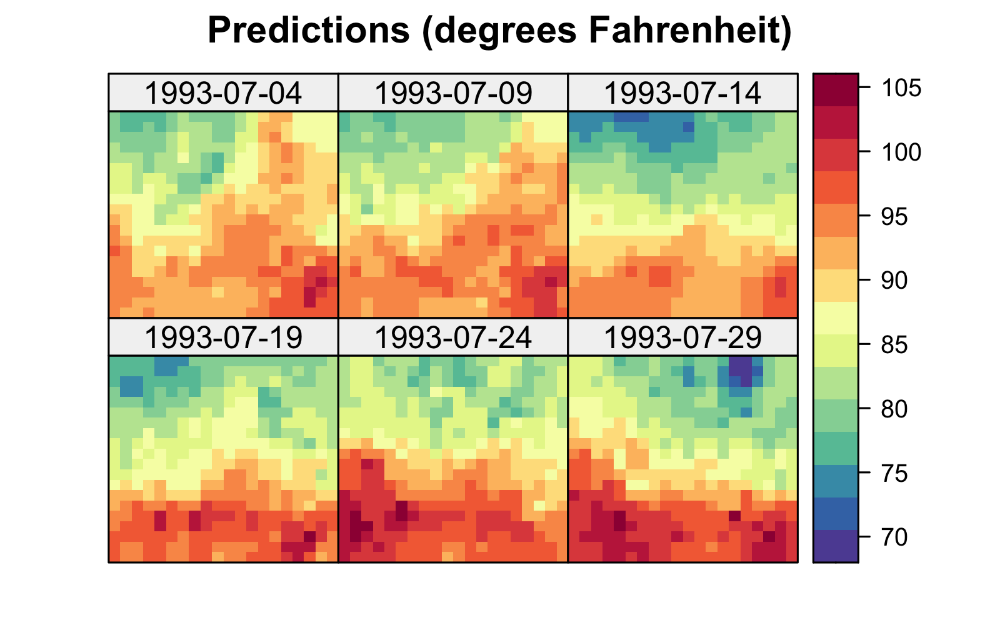
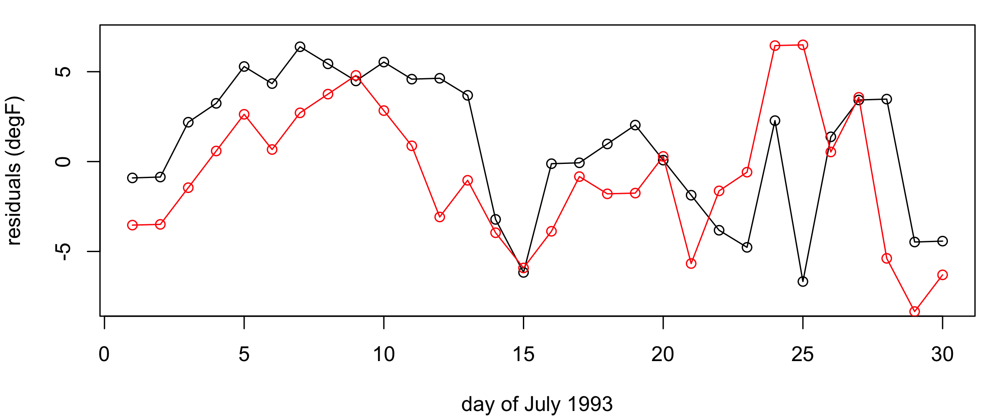
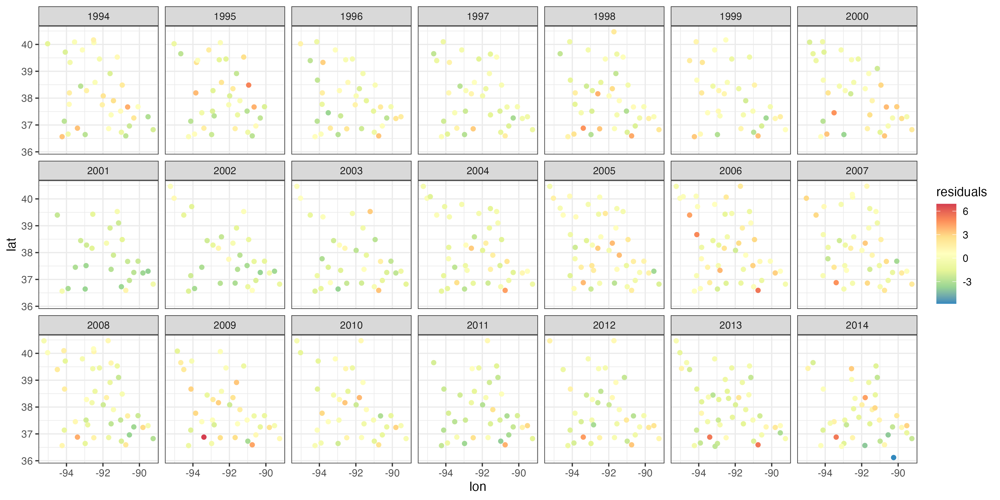

library("dplyr")
library("fields")
library("ggplot2")
library("gstat")
library("RColorBrewer")
library("sp")
library("spacetime")
library("STRbook")3 Spatio-Temporal Statistical Models
As you read this chapter and the next two, remind yourself that what you see in data may be different than what you might expect to see. Your view might be obstructed and/or not in sharp focus. Spatial predictive models can fill in the gaps and clear up your vision, but what you see in the data is still a “guess” at what is really there. We use statistical prediction methods that quantify these guesses with their associated prediction variances. Now, up the ante - include time as well and try to forecast the future… even in places where there are no current or past data! We show how this is possible in the pages that follow.
Spatio-temporal prediction based on spatio-temporal statistical modeling is a central theme of this book. Importantly, our type of prediction comes with prediction variances that quantify the uncertainty in the prediction. Predicting the future is notoriously hard, but at least the spatio-temporal prediction variances can quantify how hard it is - if you use the “right” model! In this spatio-temporal setting, what if your goal is not to predict new values but to study the impact of covariates on a response? As we shall see, the same statistical models that are useful for prediction also allow us to infer important relationships between covariates and responses.
We see three principal goals for spatio-temporal statistical modeling:
- Predicting a plausible value of a response variable at some location in space within the time span of the observations and reporting the uncertainty of that prediction;
- Performing scientific inference about the importance of covariates on the response variable in the presence of spatio-temporal dependence; and
- Forecasting the future value of the response variable at some location, along with the uncertainty of that forecast.
It is important to note that our observations associated with each of these goals will always include measurement error and will often be incomplete, in the sense that there are some locations in space and time that have missing observations. When modeling to accomplish any of the goals above, we have to be able to take into account these data issues, and also that our model is almost surely “wrong.” As the famous aphorism by George Box goes, “all models are wrong but some are useful” Box (1976), Box (1979). Our task is to maximize the “usefulness” and to minimize the “wrongness.”
The primary purpose of this chapter is to present an example illustrating each of the three goals given above, along with a potential modeling solution that initially does not account for a spatio-temporal error process. This will allow us to illustrate some of the benefits and shortcomings of standard approaches and show why it is often better to consider statistical models that do account for spatio-temporal dependent errors (see Chapters 4 and 5). This will also give you a chance to use some of the visualization and exploratory techniques you learned in Chapter 2, and the R Labs at the end of this chapter will further develop your R programming and analysis skills for spatio-temporal data, in preparation for later chapters.
3.1 Spatio-Temporal Prediction
To start with, consider the prediction (i.e., “interpolation”) of maximum daily temperatures on 15 July 1993 at the location denoted by the triangle in the top panel of Figure 3.1, given observations on the same variable on the same date at 138 measurement locations in the central USA (NOAA data set). We seek a predictor, and it is easy to imagine visually how we might construct one – we somehow just combine the nearest observations. Indeed, as mentioned in Section 1.2.2, Tobler’s “law” suggests that we should give more weight to nearby observations when we interpolate. But, why stop with just space? We also have other observations at different time points, so we should consider nearby observations in both space and time, as shown in the bottom panel of Figure 3.1. We have already shown in Chapter 2 (e.g., Figure 2.9) that there is strong spatio-temporal dependence in these data. Since we have observations at times before and after 15 July 1993, this application is an example of smoothing – that is, we seek a smoothing predictor. If we only had observations up to 15 July, then we would seek a filtering predictor for the entire temperature field on 15 July 1993, and a forecasting predictor for the entire field at any time after 15 July 1993. Discussion of the distinction between the three types of spatio-temporal predictor is given in Section 1.3.


Bottom: NOAA maximum daily temperature observations for 01, 15, and 30 July 1993 (degrees Fahrenheit).
The triangle corresponds to a spatial location and time point \(\{\mathbf{s}_0;t_0\}\) for which we would like to obtain a prediction of the maximum daily temperatures.
Deterministic Prediction
Perhaps the simplest way to perform spatio-temporal prediction would be to follow Tobler’s law and simply average the data in such a way as to give more weight to the nearest observations in space and time. The most obvious way to do this is through inverse distance weighting (IDW). Suppose we have spatio-temporal data given by
\[ \{Z(\mathbf{s}_{11};t_1), Z(\mathbf{s}_{21};t_1),\ldots, Z(\mathbf{s}_{m_1 1};t_1),\ldots, Z(\mathbf{s}_{1T};t_T), Z(\mathbf{s}_{2T};t_T),\ldots,Z(\mathbf{s}_{m_T T};t_T)\}, \]
where for each time \(t_j\) we have \(m_{j}\) observations. Then the IDW predictor at some location \(\mathbf{s}_{0}\) and time \(t_0\) (where, in this smoothing-predictor case, we assume that \(t_1 \leq t_0 \leq t_T\)) is given by
\[ \widehat{Z}(\mathbf{s}_0;t_0) = \sum_{j=1}^T \sum_{i=1}^{m_j} w_{ij}(\mathbf{s}_0;t_0) Z(\mathbf{s}_{i j};t_j), \tag{3.1}\]
where
\[ w_{ij}(\mathbf{s}_0;t_0) \equiv \frac{\widetilde{w}_{ij}(\mathbf{s}_0;t_0)}{\sum_{k=1}^T \sum_{\ell=1}^{m_k} \widetilde{w}_{\ell k}(\mathbf{s}_0;t_0)}, \tag{3.2}\]
\[ \widetilde{w}_{ij}(\mathbf{s}_0;t_0) \equiv \frac{1}{d((\mathbf{s}_{i j};t_j),(\mathbf{s}_0;t_0))^\alpha}, \tag{3.3}\]
\(d((\mathbf{s}_{i j};t_i),(\mathbf{s}_0;t_0))\) is the “distance” between the spatio-temporal location \((\mathbf{s}_{i j};t_j)\) and the prediction location \((\mathbf{s}_0;t_0)\), and the power coefficient \(\alpha\) is a positive real number that controls the amount of smoothing (e.g., often \(\alpha = 2\), but it does not have to be). The notation makes this look more complicated than it actually is: IDW is simply a weighted average of the data points, giving the closest locations more weight (while requiring that the weights sum to 1). You are free to choose your preferred distance \(d(\cdot,\cdot)\); a simple one is the Euclidean distance (although this implicitly treats space and time in the same way, which may not be appropriate; see Section 4.2.3). Note that if we were interested in predicting at a different spatio-temporal location, we would necessarily get different weights, but in a way that respects Tobler’s first law of geography. Also note that some practitioners require an “exact interpolator” in the sense that if the prediction location \((\mathbf{s}_0;t_0)\) corresponds to a data location, they want the prediction to be exactly the same as the data value (so, not a smoothed estimate there). The formula in Equation 3.1 gives an exact interpolator. Thus, \(\widehat{Z}(\mathbf{s}_0;t_0) = Z(\mathbf{s}_{k \ell};t_\ell)\) if a data location \((\mathbf{s}_{k \ell};t_\ell)\) corresponds to the prediction location \((\mathbf{s}_0;t_0)\) (since \(\alpha > 0\), \((\mathbf{s}_0;t_0)\) being a data location implies that the right-hand side of Equation 3.3 is infinite, so it gets a weight of 1 in Equation 3.2}. As discussed in Cressie (1993, p. 379), exact interpolators can be problematic when one has measurement uncertainty, and one way to obtain a smoothing predictor is to use weights in Equation 3.3 proportional to \(1/(d(\cdot,\cdot) + c)^\alpha\), where \(c > 0\). (Setting \(c=0\) reverts to the exact interpolator.)
Tip
Computing distances between a single set of coordinates can be done in base R using the function dist. To compute distances between two sets of coordinates, it is more convenient to use the function rdist in the package fields, or the function spDists in the package sp, both of which take two sets of coordinates as arguments. The latter also works with Spatial objects defined in the package sp.
The left panel in Figure 3.2 shows predictions of maximum temperature for six days within the month of July 1993 using 30 days of July 1993 data, where data from 14 July 1993 was omitted. These predictions were obtained using IDW with \(\alpha = 5\). In this example, setting \(\alpha\) to a smaller value (such as \(2\)) gives a smoother surface since more weight is given to observations that are “far” from the prediction locations. In deterministic interpolators, smoothing parameters such as \(\alpha\) are usually chosen using a procedure known as cross-validation (see Note 3.1 and the left panel in Figure 3.3). From the IDW prediction in Figure 3.2, we observe that our predictions on the day with no data look smoother than those on days for which we have data. We shall see in Chapter 4 that this is typical of most predictors, including stochastic ones that are optimal in the sense of minimizing the mean squared prediction error (MSPE).

Tmax in degrees Fahrenheit for the maximum temperature in the NOAA data set within a square box enclosing the domain of interest for six days (each five days apart) spanning the temporal window of the data, 01 July 1993 to 30 July 1993, using (left) inverse distance weighting functionality from the R package gstat with inverse distance power \(\alpha = 5\) and (right) a Gaussian radial basis kernel with bandwidth \(\theta =0.5\). Data for 14 July 1993 were omitted from the original data set.
In general, IDW is a type of spatio-temporal kernel predictor. That is, in Equation 3.3 we can let
\[ \widetilde{w}_{ij}(\mathbf{s}_0;t_0) = k((\mathbf{s}_{ij};t_j),(\mathbf{s}_0;t_0);\theta), \]
where \(k((\mathbf{s}_{ij};t_j),(\mathbf{s}_0;t_0);\theta)\) is a kernel function (i.e., a function that quantifies the similarity between two locations) that depends on the distance between \((\mathbf{s}_{ij};t_j)\) and \((\mathbf{s}_0;t_0)\) and some bandwidth parameter, \(\theta\). Specifically, the bandwidth controls the “width” of the kernel, so a larger bandwidth averages more observations (and produces smoother prediction fields) than a narrow bandwidth. A classic example of a kernel function is the Gaussian radial basis kernel
\[ k((\mathbf{s}_{ij};t_j),(\mathbf{s}_0;t_0);\theta) \equiv \exp\left( - \frac{1}{\theta} d((\mathbf{s}_{ij};t_j),(\mathbf{s}_0;t_0))^2\right), \tag{3.4}\]
where the bandwidth parameter \(\theta\) is proportional to the variance parameter in a normal (Gaussian) distribution. Many other kernels exist (e.g., tricube, bisquare, Epanechnikov), some of which have compact support (i.e., provide zero weight beyond a certain distance threshold). If we write \(d(\cdot,\cdot)^\alpha = \exp( \alpha \log d(\cdot,\cdot))\), it is clear that \(\alpha\) in IDW plays the role of the bandwidth parameter and IDW has non-compact support. The right panel of Figure 3.2 shows an interpolation of the NOAA temperature data using a Gaussian radial basis kernel with \(\theta = 0.5\). As in IDW, \(\theta\) is usually chosen by cross-validation (see the right panel in Figure 3.3).
Traditional implementations of deterministic methods do not explicitly account for measurement uncertainty in the data nor do they provide model-based estimates of the prediction uncertainty. One might argue that, for non-exact interpolators, one is implicitly removing (filtering or smoothing) the observation error with the averaging that takes place as part of the interpolation. However, there is no mechanism to incorporate explicit knowledge of the magnitude of the measurement error. Regarding prediction uncertainty of deterministic predictors, we can get estimates of the overall quality of predictions by doing cross-validation (see Note 3.1). Recall that we have also suggested using cross-validation to select the degree of smoothing (e.g., the \(\alpha\) parameter in IDW and, more generally, the \(\theta\) parameter in the kernel-based prediction). As an example, in Figure 3.3 we show the leave-one-out cross-validation (LOOCV) MSPE score for different values of \(\alpha\) and \(\theta\) (lower cross-validation scores are better) when doing IDW and Gaussian kernel smoothing for the NOAA maximum temperature data set in July 1993. These cross-validation analyses suggest that \(\alpha = 5\) and \(\theta = 0.6\) are likely to give the best out-of-sample predictions for this specific example. In addition, note that the lowest cross-validation score for the Gaussian kernel smoother is lower (i.e., better) than the lowest cross-validation score for IDW. This suggests that the Gaussian kernel smoother is likely to be a better predictor than the IDW smoother for these data.
Cross-validation can also be used to compare models through their predictions, as the following Note 3.1 explains.

Note 3.1: Cross-Validation
Cross-validation seeks to evaluate model predictions by splitting up the data into a training sample and a validation sample, then fitting the model with the training sample and evaluating it with the validation sample. In K-fold cross-validation, we randomly split the available data into \(K\) roughly equal-size components (or “folds”). Each fold is held out, the model is trained on the remaining \(K-1\) folds, and then the model is evaluated on the fold that was held out. Specifically, for \(k=1,\ldots,K\) folds, fit the model with the \(k\)th fold removed, and obtain predictions \(\widehat{Z}^{(-k)}_i\) for \(i=1,\ldots,m_k\), where \(m_k\) is the number of data in the \(k\)th fold. We then select a metric by which we evaluate the predictions relative to the held-out samples. For example, if we were interested in the mean squared prediction error (MSPE), we would compute \(MSPE_k = (1/m_k) \sum_{i=1}^{m_k} (Z_i - \widehat{Z}^{(-k)}_i)^2\) for the \(m_k\) observations in the \(k\)th fold, \(k=1,\ldots,K\). The \(K\)-fold cross-validation score is then
\[ CV_{(K)} = \frac{1}{K} \sum_{k=1}^K MSPE_k. \]
It has been shown empirically that good choices for the number of folds are \(K=5\) and \(K=10\).
A special case of \(K\)-fold cross-validation occurs when \(K=m\). This is called leave-one-out cross-validation (LOOCV). In this case, only a single observation is used for validation and the remaining observations are used to make up the training set. This is repeated for all \(m\) observations. The LOOCV score is then
\[ CV_{(m)} = \frac{1}{m} \sum_{i=1}^m MSPE_i. \]
LOOCV typically has low bias as an estimate of the expected squared error of a test sample, but it can also have high variance. This is why the choice of \(K=5\) or \(K=10\) often provides a better compromise between bias and variance. It is also the case that LOOCV can be computationally expensive to implement in general, since it requires the model to be fitted \(m\) times (although there are notable exceptions such as with the predicted residual error sum of squares (PRESS) statistic in multiple linear regression models; see Appendix B). For more details on cross-validation, see Hastie et al. (2009), Section 7.10.
Tip
\(K\)-fold cross-validation is an “embarrassingly parallel” problem since all the \(K\) validations can be done simultaneously. There are several packages in R that enable this, with parallel and foreach among the most popular. The vignettes in these packages contain more information on how to use them for multicore computing.
3.2 Regression (Trend-Surface) Estimation
In Section 3.1 we presented some simple deterministic predictors to obtain predictions at spatio-temporal locations given a spatio-temporal data set. We can also use a basic statistical regression model to obtain predictions for such data, assuming that all of the spatio-temporal dependence can be accounted for by “trend” (i.e., covariate) terms. Such a model has the advantage of being exceptionally simple to implement in almost any software package. In addition, a regression model explicitly accounts for model error (usually assumed independent), and it also allows us to obtain a model-based prediction-error variance, although cross-validation scores still provide useful insight into model performance.
Consider a regression model that attempts to account for spatial and temporal trends. To make the notation a bit simpler, we consider the case where we have observations at discrete times \(\{t_j: j =1,\ldots,T\}\) for all spatial data locations \(\{\mathbf{s}_i: i=1,\ldots,m\}\). For example,
\[ Z(\mathbf{s}_i;t_j) = \beta_0 + \beta_1 X_1(\mathbf{s}_i;t_j) + \ldots + \beta_p X_p(\mathbf{s}_i;t_j) + e(\mathbf{s}_i;t_j), \tag{3.5}\]
where \(\beta_0\) is the intercept and \(\beta_k~(k > 0)\) is a regression coefficient associated with \(X_k(\mathbf{s}_i;t_j)\), the \(k\)th covariate at spatial location \(\mathbf{s}_i\) and time \(t_j\). We also assume for the moment \(iid\) errors such that \(e(\mathbf{s}_i;t_j) \sim \; indep. \; N(0,\sigma^2_e)\) for all \(\{\mathbf{s}_i;t_j\}\) where there are data, and note that \(N(\mu,\sigma^2)\) corresponds to a normal distribution with mean \(\mu\) and variance \(\sigma^2\). The covariates \(X_k(\mathbf{s}_i;t_j)\) may describe explanatory features, such as elevation, that vary spatially but are temporally invariant (on the scales of interest here), time trends (such as an overall seasonal effect) that are spatially invariant but temporally varying, or other variables such as humidity, that are both spatially and temporally varying. We might also consider spatio-temporal “basis functions” that can be used to reconstruct the observed data.
We take a little space here to discuss basis functions beyond the brief explanation given in Chapter 1. What are basis functions? Imagine that we have a complex curve or surface in space. We are often able to decompose this curve or surface as a linear combination of some “elemental” basis functions. For example,
\[ Y(\mathbf{s}) = \alpha_1 \phi_1(\mathbf{s}) + \alpha_2 \phi_2(\mathbf{s}) + \ldots + \alpha_r \phi_r(\mathbf{s}), \tag{3.6}\]
where \(\{\alpha_i\}\) are constants and \(\{\phi_i(\mathbf{s})\}\) are known basis functions. We can think of the coefficients \(\{\alpha_i\}\) as weights that describe how important each basis function is in representing the function \(Y(\mathbf{s})\). The basis functions can be local with compact support, or can be global, taking values across the whole domain (see Figure 3.4). In statistics, when \(Y(\mathbf{s})\) is a random process, we typically assume the basis functions are known and the coefficients (weights) are random. The expression in Equation 3.6 could be written as a function of time \(t\), or most generally as a function of \(\mathbf{s}\) and \(t\). In time series, the domain over which the basis functions take their values is the one-dimensional real line, whereas in spatial statistics, the domain is typically one-dimensional space (see Figure 3.4) or two-dimensional space (see Figure 3.5); in spatio-temporal statistics, the domain is over both space and time. Examples of basis functions include polynomials, splines, wavelets, sines and cosines, among many others. We often construct spatio-temporal basis functions via a tensor product of spatial basis functions and temporal basis functions (see Note 4.1).


Now consider the maximum daily temperature Tmax in the NOAA data set for the month of July 1993, where we have observations at \(m = 138\) common spatial locations \(\{\mathbf{s}_i: i=1,\ldots,m\}\) for \(\{t_j: j = 1,\ldots, T= 31\}\) days. In this case, we could account for spatial trends by allowing the covariates \(\{X_k\}\) to correspond to the spatio-temporal coordinate, and/or their transformations and interactions. For example, let \(\mathbf{s}_i \equiv (s_{1,i},s_{2,i})'\), and consider a linear model with the following basis functions:
- overall mean: \(X_0(\mathbf{s}_i;t_j) = 1\), for all \(\mathbf{s}_i\) and \(t_j\);
- linear in \(lon\)-coordinate: \(X_1(\mathbf{s}_i;t_j) = s_{1,i}\), for all \(t_j\),
- linear in \(lat\)-coordinate: \(X_2(\mathbf{s}_i;t_j) = s_{2,i}\), for all \(t_j\);
- linear time (day) trend: \(X_3(\mathbf{s}_i;t_j) = t_j\), for all \(\mathbf{s}_i\);
- \(lon\)–\(lat\) interaction: \(X_4(\mathbf{s}_i;t_j) = s_{1,i} \, s_{2,i}\), for all \(t_j\);
- \(lon\)–\(t\) interaction: \(X_5(\mathbf{s}_i;t_j) = s_{1,i} \, t_j\), for all \(s_{2,i}\);
- \(lat\)–\(t\) interaction: \(X_6(\mathbf{s}_i;t_j) = s_{2,i} \, t_j\), for all \(s_{1,i}\);
- additional spatial-only basis functions: \(X_k(\mathbf{s}_i;t_j) = \phi_{k-6}(\mathbf{s}_i), k =7,\dots,18\), for all \(t_j\) (see Figure 3.13).
Note that the space and time coordinates used in \(X_0,\ldots,X_6\) can be thought of as basis functions; we choose the separate notation between these latitude, longitude, and time trend covariates and the spatial-only basis functions (denoted \(\{\phi_k: k=1,\ldots,12\}\)) given in Figure 3.13 for the sake of interpretability. In this example, there is an intercept and \(p=18\) regression coefficients.

The regression model given in Equation 3.16 can be fitted via ordinary least squares (OLS), in which case we find estimates of the parameters \(\beta_0, \beta_1,\ldots,\beta_p\) that minimize the residual sum of squares,
\[ RSS = \sum_{j=1}^T \sum_{i=1}^m (Z(\mathbf{s}_{i};t_j) - \widehat{Z}(\mathbf{s}_{i};t_j))^2. \tag{3.7}\]
We denote these estimates by \(\{\widehat{\beta}_0,\widehat{\beta}_1,\ldots,\widehat{\beta}_p\}\) and we write \(\widehat{Z}(\mathbf{s};t) = \widehat{\beta}_0 + \widehat{\beta}_1 X_1(\mathbf{s};t) + \ldots + \widehat{\beta}_p X_p(\mathbf{s};t)\). (We also obtain an estimate of the variance parameter, namely \(\widehat{\sigma}^2_e = RSS/(mT-p-1)\).) This then allows us to get predictions for a mean response, or a new response, \(Z(\mathbf{s}_0;t_0)\), at any location \(\{\mathbf{s}_0;t_0\}\) for which we have covariates. We can also obtain uncertainty estimates for these predictions. The formulas for these estimates and predictors are most easily seen from a matrix representation, as shown in Note 3.3. Figure 3.7 shows the predictions and the prediction standard errors (assuming the regression model with an intercept and \(p=18\)) for the maximum temperature data in the NOAA data set in July 1993, with 14 July 1993 omitted when fitting the model.

R function lm. Data for 14 July 1993 were purposely omitted from the original data set during fitting.
The predictions are much smoother than those found using kernel smoothing (Figure 3.2), a direct result of using basis functions that are spatio-temporally smooth. This is not always the case, and using covariates that are highly spatially varying (e.g., from topography) will yield predictions that also vary substantially with space. Note also from Figure 3.7 that the prediction standard errors do not show much structure because the \(X\)s are accounting for most of the spatio-temporal variation in the data. Uncertainty increases at the domain edges where prediction becomes extrapolation.
It is important to mention here that the regression model given in Equation 3.16 does not explicitly account for measurement errorss in the responses, and thus that variation due to measurement error is confounded with the variation due to lack of fit in the residual variance \(\sigma^2_e\). We account explicitly for this measurement-error variation (and small-scale spatio-temporal variation) in Chapters 4 and 5. In addition, note that the regression predictor can be considered a type of kernel predictor (see Appendix B).
Tip
Basis functions such as those depicted in Figure 3.13 can be easily constructed using the package FRK, which we explore further in Chapter 4. Basis functions can be constructed at multiple resolutions, can be spatial-only (as used here) or also spatio-temporal. See Lab 3.2 for more details.
3.2.1 Model Diagnostics: Dependent Errors
When we first learn how to do regression modeling in statistics, we gain an appreciation for the importance of model diagnostics to verify the assumptions of the model. For example, we look for the presence of outliers, influential observations, non-constant error variance, non-normality, dependence in the errors, and so forth Kutner et al. (2004). It is particularly important to consider the possibility of dependent errors in the case where the data are indexed in space or time (see Chapter 6 for more detailed discussion about model evaluation). From an exploratory perspective, one can calculate the spatio-temporal covariogram (or semivariogram), discussed in Chapter 2, from the residuals, \(\widehat{e}(\mathbf{s}_{i};t_j) \equiv Z(\mathbf{s}_{i};t_j) - \widehat{Z}(\mathbf{s}_{i};t_j)\), and look for dependence structure as a function of spatial and temporal lags. As seen in Figure 3.8, there is ample spatial and temporal structure in the residuals. It is instructive to compare Figure 3.8 with the empirical semivariogram calculated from the original data set and given in Figure 2.17. The former has a lower sill, and therefore the basis functions and the other covariates have been able to explain some of the spatio-temporal variability in the data, but clearly not all of it.

variogram in gstat.
More formally, one can apply a statistical test for temporal dependence such as the Durbin–Watson test (see Note 3.2), and if the data correspond to areal regions in two-dimensional space, one can use a test for spatial dependence such as Moran’s \(I\) test (see Note 3.2). In looking at spatio-temporal dependence, we can consider the “space-time index” (STI) approach of Henebry (1995), which is a type of Moran’s \(I\) statistic for spatio-temporal data (see Cressie & Wikle, 2011, p. 303). This approach was developed for areal regions that have a known adjacency structure. In principle, this can be extended to the case of spatio-temporal data with continuous spatial support; see Lab 3.2.
Alternatively, we can consider a spatio-temporal analog to the Durbin–Watson test. Cressie & Wikle (2011, p. 131) give a statistic based on the empirical (spatial) semivariogram that can be extended to the spatio-temporal setting. In particular, let
\[ F \equiv \left| \frac{\widehat{\gamma}_e(||\mathbf{h}_1||;\tau_1)}{\widehat{\sigma}^2_e}-1\right| , \]
where \(\widehat{\gamma}_e (||\mathbf{h}_1||;\tau_1)\) is the empirical semivariogram estimate at the smallest possible spatial (\(||\mathbf{h}_1||\)) and temporal (\(\tau_1\)) lags (see Note 2.1), and \(\widehat{\sigma}^2_e\) is the regression-error-variance estimate (see Note 3.3). If this value of \(F\) is “large,” we reject the null hypothesis of spatio-temporal independence. We can evaluate what is “large” in this case by doing a permutation test of the null hypothesis of independence, which does not depend on any distributional assumptions on the test statistic, \(F\). In this case, the data locations (in space and time) are randomly permuted and \(F\) is calculated for many such permutation samples. If the statistic \(F\) calculated with the observed data is below the 2.5th percentile or above the 97.5th percentile of these permutation samples, then we reject the null hypothesis of spatio-temporal independence (at the 5% level of significance), which suggests that the data are dependent.
Note 3.2: Durbin–Watson and Moran’s \(I\) Tests
One of the most used tests for serial dependence in time-series residuals is the Durbin–Watson test Kutner et al. (2004). Let \(\widehat{e}_t = Z_t - \widehat{Z}_t\) be the residual from some fitted time-series model for which we have \(T\) observations \(\{Z_t\}\). The Durbin–Watson test statistic is given by
\[ d = \frac{\sum_{t=2}^T (\widehat{e}_t - \widehat{e}_{t-1})^2}{\sum_{t=1}^T \widehat{e}_t^2}. \]
The intuition for this test is that if residuals are highly (positively) correlated, then \(\widehat{e}_t - \widehat{e}_{t-1}\) is small relative to \(\widehat{e}_t\) and so, as \(d\) gets closer to 0, there is more evidence of positive serial dependence (e.g., a “rule of thumb” suggests that values less than 1 indicate strong positive serial dependence). In contrast, as the value of \(d\) gets larger (it is bounded above by 4), it is indicative of no positive serial dependence. This test can be formalized with appropriate upper and lower critical values for \(d\), and statistical software packages can easily calculate these, as well as the analogous test for negative serial dependence.
One of the most commonly used tests for spatial dependence for spatial lattice data is Moran’s \(I\) test Waller & Gotway (2004). This test can be applied to the data directly, or to the residuals from some spatial regression model. Let \(\{Z_i: i=1,\ldots,m\}\) represent spatially referenced data (or residuals) for \(m\) spatial locations. Then, Moran’s \(I\) statistic is calculated as
\[ I = \frac{m \sum_{i=1}^m \sum_{j=1}^m w_{ij} (Z_i - \bar{Z})(Z_j - \bar{Z}) }{(\sum_{i=1}^m \sum_{j=1}^m w_{ij})(\sum_{i=1}^m (Z_i - \bar{Z})^2) }, \tag{3.8}\]
where \(\bar{Z} = (1/m)\sum_{i=1}^m Z_i\) is the spatial mean and \(w_{ij}\) are spatial adjacency “weights” between locations \(i\) and \(j\) (where we require \(w_{ii} = 0\), for all \(i=1,\ldots,m\)). Thus, Moran’s \(I\) statistic is simply a weighted form of the usual Pearson correlation coefficient, where the weights are the spatial proximity weights, and it takes values between \(-1\) and \(1\). If Equation 3.8 is positive, then neighboring regions tend to have similar values, and if it is negative, then neighboring regions tend to have different values. Appropriate critical values or \(p\)-values are easily obtained in many software packages.
Note that there are additional measures of temporal dependence (e.g., the Ljung–Box test; see Shumway & Stoffer (2006)) and spatial dependence (e.g., the Geary \(C\) test; see Waller & Gotway (2004)).
It is very common, when studying environmental phenomena, that a linear model of some covariates will not explain all the observed spatio-temporal variability. Thus, fitting such a model will frequently result in residuals that are spatially and temporally correlated. This is not surprising, since several environmental processes are certainly more complex than could be described by simple geographical and temporal trend terms. In Figure 3.9 we show the time series of the residuals at two observation locations \((81.38^\circ\)W, \(35.73^\circ\)N) and (\(83.32^\circ\)W, \(37.60^\circ\)N), respectively, and the spatial residuals between 24 July and 31 July 1993. The residual time series exhibit considerable temporal correlation (i.e., residuals close together in time tend to be more similar than residuals far apart in time), and the spatial residuals exhibit clear spatial correlation (i.e., residuals close together in space tend to be more similar than residuals far apart in space). In Lab 3.2 we go further and use the Durbin–Watson and Moran’s \(I\) tests to reject the null hypotheses of no temporal or spatial correlation in these residuals.


Given that our diagnostics have suggested there is spatio-temporal dependence in the errors after fitting the trend surface, what can we do? Readers who are familiar with more complicated regression procedures might suggest that we could use a generalized least squares (GLS) procedure that explicitly accounts for the dependence in the errors. That is, GLS relaxes the assumption of independence in the errors, so that \(e(\mathbf{s}_i;t_j)\) and \(e(\mathbf{s}_\ell;t_k)\) could be correlated. In this case, the vector of errors, \(\mathbf{e}\equiv (e(\mathbf{s}_1;t_1),\ldots,e(\mathbf{s}_m;t_T))'\), has the multivariate normal distribution \(\mathbf{e}\sim N(\mathbf{0},\mathbf{C}_e)\), where \(\mathbf{C}_e\) is a spatio-temporal covariance matrix. But do we know in advance what this covariance matrix is? Typically, no – and it is further complicated by the fact that to predict at spatio-temporal locations for which we do not have data, we need to know what the error dependence is between any two locations in time and space within our prediction domain, not just those for which we have observations! This aspect of spatio-temporal prediction will be a primary focus of Chapter 4.
One might ask, what is the problem with ignoring the dependence in the errors when doing OLS regression? The answer depends somewhat on the goal. It is fairly easy to show that the OLS parameter estimates and predictions are still unbiased even if one has ignored the dependence in the errors. But ignoring the dependence tends to give inappropriate standard errors and prediction standard errors. In the case of positive dependence (which is the most common case in spatio-temporal data – recall Tobler’s law), the standard errors and prediction standard errors are underestimated if one ignores dependence, giving a false sense of how good the estimates and predictions really are. This issue comes up again in Section 3.2.2.
Note 3.3: Ordinary Least Squares Regression: Matrix Representation
Consider an \(m\)-dimensional response vector, \(\mathbf{Z}= (Z_1,\ldots,Z_m)'\), and an \(m \times (p+1)\) matrix of predictors, \(\mathbf{X}\), where we assume that the first column of this matrix contains a vector of \(1\)s for the model intercept. That is,
\[ \mathbf{X}= \left[\begin{array}{cccc} 1 & x_{11} & \ldots & x_{1p} \\ 1 & x_{21} & \ldots & x_{2p} \\ \vdots & \vdots & \ddots & \vdots \\ 1 & x_{m1} & \ldots & x_{mp} \end{array} \right]. \]
Then the regression equation is given by
\[ \mathbf{Z}= \mathbf{X}\boldsymbol{\beta}+ \mathbf{e}, \]
where \(\boldsymbol{\beta}\) is a \((p+1)\)-dimensional parameter vector, and the error vector, \(\mathbf{e}= (e_1,\ldots,e_m)'\), has the multivariate normal distribution \(\mathbf{e}\sim N(\mathbf{0},\sigma^2_e \mathbf{I})\), where \(\mathbf{I}\) is an \(m \times m\) identity matrix. The ordinary least squares parameter estimates are given by \(\widehat{\boldsymbol{\beta}} = (\mathbf{X}' \mathbf{X})^{-1} \mathbf{X}' \mathbf{Z}\), and the variance–covariance matrix for these estimates is given by \(\widehat{\sigma}^2_e (\mathbf{X}' \mathbf{X})^{-1}\), with \(\widehat{\sigma}^2_e = (1/(m-p-1)) \sum_i (Z_i - \widehat{Z}_i)^2\). The estimated mean response and prediction, \(\widehat{Z}_i\), is given by \(\widehat{Z}_i = \mathbf{x}_i' \widehat{\boldsymbol{\beta}}\), where \(\mathbf{x}'_i\) is the \(i\)th row of \(\mathbf{X}\). Further, the variance of the \(j\)th regression-coefficient estimator, \(\widehat{\beta}_j\), is given by the \(j\)th diagonal element of \(\widehat{\sigma}^2_\epsilon (\mathbf{X}' \mathbf{X})^{-1}\). If \(\widehat{Z}_i\) is an estimate of the mean response, then an estimate of its variance is given by \(\widehat{\sigma}^2_e (\mathbf{x}_i ' (\mathbf{X}' \mathbf{X})^{-1} \mathbf{x}_i)\). If one is predicting a new observation, say \(Z_h\), the prediction is \(\widehat{Z}_h= \mathbf{x}_h' \widehat{\boldsymbol{\beta}}\), and the prediction variance is estimated by \(\widehat{\sigma}^2_e (1 + \mathbf{x}_h ' (\mathbf{X}' \mathbf{X})^{-1} \mathbf{x}_h)\). Derivations and details can be found in textbooks on multiple regression (see for example Kutner et al., 2004).
3.2.2 Parameter Inference for Spatio-Temporal Data
In many scientific applications of spatio-temporal modeling, one may only be interested in whether the covariates (the \(X\)s) are important in the model for explanation rather than for prediction. Such examples typically include scientifically meaningful covariates, such as a habitat covariate (\(X\)) related to the relative abundance (\(Z\)) of an animal in some area, or whether some demographic variable (\(X\)) is associated with household income (\(Z\)). In this section, for illustration we again consider the maximum temperature data in the NOAA data set – specifically, we consider the regression model given in Section 3.2, but our focus here is on the regression parameters. For example, do we need the longitude-by-latitude spatial interaction term (\(X_4\)) or the latitude-by-day term (\(X_6\)) in the regression?
| Term | \(\hat\beta_{\textrm{ols}}\) (SE) | \(\hat\beta_{\textrm{gls}}\) (SE) |
|---|---|---|
| Intercept | 192.240** (97.854) | 195.320** (98.845) |
| Longitude | 1.757 (1.088) | 1.780 (1.097) |
| Latitude | -1.317 (2.556) | -0.974 (2.597) |
| Day | -1.216*** (0.134) | -1.237*** (0.136) |
| Longitude × Latitude | -0.026 (0.028) | -0.022 (0.029) |
| Longitude × Day | -0.023*** (0.001) | -0.023*** (0.001) |
| Latitude × Day | -0.019*** (0.002) | -0.019*** (0.002) |
| \(\alpha_{1}\) | 16.647*** (4.832) | 19.174*** (4.849) |
| \(\alpha_{2}\) | 18.528*** (3.056) | 16.224*** (3.125) |
| \(\alpha_{3}\) | -6.607** (3.172) | -4.204 (3.199) |
| \(\alpha_{4}\) | 30.545*** (4.370) | 27.500*** (4.493) |
| \(\alpha_{5}\) | 14.739*** (2.747) | 13.957*** (2.759) |
| \(\alpha_{6}\) | -17.541*** (3.423) | -15.779*** (3.461) |
| \(\alpha_{7}\) | 28.472*** (3.552) | 25.985*** (3.613) |
| \(\alpha_{8}\) | -27.348*** (3.164) | -25.230*** (3.202) |
| \(\alpha_{9}\) | -10.235** (4.457) | -7.401 (4.556) |
| \(\alpha_{10}\) | 10.558*** (3.327) | 8.561** (3.396) |
| \(\alpha_{11}\) | -22.758*** (3.533) | -19.834*** (3.569) |
| \(\alpha_{12}\) | 21.864*** (4.813) | 17.771*** (5.041) |
| Observations | 3,989 | 3,989 |
Note: \(^{*}p < 0.1\); \(^{**}p < 0.05\); \(^{***}p < 0.01\)
The middle column of Table 3.1 shows the OLS parameter estimates and their standard errors (i.e., square root of their variances) from the OLS fit of this regression model, assuming independent errors. The standard errors suggest that longitude, latitude, and the longitude–latitude interaction, are not important in the model given all of the other variables included in the model, based on the observation that their confidence intervals cover zero. It might be surprising to think that latitude is not important here, since we saw in Chapter 2 that there is a clear latitudinal dependence in temperature for these data (it is typically cooler the further north you go in the central USA). But recall that when interpreting parameters in multiple regression we are considering their importance in the presence of all of the other variables in the model. Thus, this result may be due to the fact that there are interactions of the latitude effect with longitude and/or time, or it could be due to other factors. We discuss some of these below.
As discussed in Section 3.2, the residuals from this regression fit exhibit spatio-temporal dependence, and thus the OLS assumption of independent errors is violated, which calls into question the validity of the standard errors given in the middle column of Table Table 3.1. As already mentioned, in the case of positive dependence (present in the residuals here) the standard errors are underestimated, potentially implying that a covariate is important in the model when it really is not. In the right-hand column we show the estimates and standard errors after fitting using GLS, where the covariance of the errors is assumed, a priori, to be a function of distance in space and time, specifically constructed from a Gaussian kernel with bandwidth 0.5 (see Lab 3.2 for details). Note that all the standard errors are larger, and some of our conclusions have changed regarding which effects are significant, and which are not.
Readers who are familiar with regression analysis may also recall that there are other factors that might affect the standard errors given in Table 3.1. For example, the presence of moderate to serious multicollinearity in the covariates (e.g., when some linear combination of \(X\)s is approximately equal to one or more of the other \(X\) variables) can inflate the standard errors. In Lab 3.2, we see the effect of adding another basis function, \(\phi_{13}(\mathbf{s})\), that is a slightly noisy version of \(\phi_5(\mathbf{s})\). Without \(\phi_{13}(\mathbf{s})\), the effect of \(\phi_5(\mathbf{s})\) is considered significant in the model (see Table 3.1). However, the estimate of \(\alpha_5\) is not significant at the 1% level when both \(\phi_5(\mathbf{s})\) and \(\phi_{13}(\mathbf{s})\) are included in the model.
Inference can also be affected by confounding, in which interpretation or significance is substantially altered when an important variable is ignored, or perhaps when an extraneous variable is included in the model. Since we typically do not know or have access to all of the important variables in a regression, this is often a problem. Indeed, one of the interpretations of dependent errors in spatial, time-series, and spatio-temporal models is that they probably represent the effects of covariates that were left out of the model. As we describe in Chapter 4, this implies that there can be confounding between the spatio-temporally dependent random errors and covariates of primary interest, which can affect parameter inference and accompanying interpretations. But, if our goal is spatio-temporal prediction, this confounding is not necessarily a bad thing, since building dependence into the model is somewhat of an “insurance policy” against our model missing important covariates.
Tip
Several excellent packages can be used to neatly display results from models in R, such as xtable and stargazer. All tables in this chapter were produced using stargazer.
3.2.3 Variable Selection
As mentioned in the previous section, it can be the case that when \(p\) (the number of covariates) is fairly large, we do not believe that all of them are truly related to the response, and we are interested in choosing which are the most important. This is generally called variable selection. Outside the context of regression, Chapter 6 considers the more general problem of model selection.
It would be ideal if we could test all possible combinations of all \(p\) covariates and determine which one gives the best predictive ability. This can be done if \(p\) is small, but it quickly becomes problematic for large \(p\) as there are \(2^p\) possible models that would have to be considered, assuming all of them have an intercept parameter. Alternatively, we can consider a best subsets procedure that uses a special algorithm (such as the “leaps and bounds algorithm”) to efficiently find a few of the best models for a given number of covariates (see, for example, Kutner et al., 2004).
Another option is to use an automated selection algorithm such as forward selection. In this case, we start with a model that includes just the intercept, and then we find which covariate reduces the error sums of squares (or some other chosen model-selection criterion) the most. That covariate is added to the model, and we then consider which of the remaining \((p-1)\) gives the best two-variable model. We continue this until some pre-specified stopping rule is reached. In the context of the regression with the NOAA data set, Table 3.2 shows the best candidate models for one to four variables (in addition to the intercept), as obtained by the forward-selection algorithm using the function step in R; here the Akaike information criterion (AIC, see Section 6.4.4) was adopted as the model-selection criterion. Note how the residual standard error decreases sharply with the inclusion of one covariate (in this case, latitude) and slowly thereafter. We have already seen that there is considerable correlation between maximum temperature and latitude, so this is not surprising. As further evidence of this, note that latitude, which was not significant in the full model, is the single most important variable according to forward stepwise selection. But when the latitude-by-day interaction term enters the model, the parameter estimate for latitude decreases noticeably. For comparison, Table 3.3 shows the same forward-selection analysis but now using the residual sum of squares (RSS) as the model-selection criterion. Note that this still has latitude as the most important single variable, but the longitude-by-day interaction is the second variable entered into the model (followed by the latitude-by-day variable), and the day variable is not included. This shows that the choice of criterion can make a substantial difference when doing stepwise selection: the AIC criterion penalizes for model complexity (i.e., the number of variables in the model), whereas the RSS criterion does not.
Alternative stepwise methods include backward-selection and mixed-selection algorithms (see James et al., 2013, Chapter 6). Note that no stepwise procedure is guaranteed to give the best model other than for the single-covariate case, but these methods can provide potential candidate models that are reasonable. It is also important to realize that the forward-selection procedure can be used in the “large \(p\), small \(n\)” case where one has more covariates \(p\) than observations \(n\), at least up to models of size \(n-1\), which is increasingly common in “big data” statistical-learning applications (James et al., 2013). (Note that in this book we prefer to use \(m\) instead of \(n\) to represent sample size for spatio-temporal data.)
The subset-selection methods discussed above penalize model complexity at the expense of model fit by removing variables. This is a manifestation of a common problem in statistics, balancing the trade-off between variance and bias. That is, these methods trade some bias for variance reduction by removing variables. Another approach to this problem in regression is to constrain the least squares estimates in such a way that the regression coefficients are regularized (or shrunk) towards zero, hence adding bias. The two most-used approaches for regularization in regression are ridge regression and the lasso. These are briefly described in Note 3.4.
| (1) | (2) | (3) | (4) | (5) | |
|---|---|---|---|---|---|
| Intercept | 88.673*** | 148.940*** | 147.840*** | 136.810*** | 138.420*** |
| Latitude | -1.559*** | -1.559*** | -1.274*** | -1.273*** | |
| Day | 0.069*** | 0.755*** | 0.755*** | ||
| Latitude × Day | -0.018*** | -0.018*** | |||
| Longitude | 0.019 | ||||
| Observations | 3,989 | 3,989 | 3,989 | 3,989 | 3,989 |
| Residual Std. Error | 7.726 | 4.710 | 4.669 | 4.626 | 4.625 |
Note: \(^{*}p < 0.1\); \(^{**}p < 0.05\); \(^{***}p < 0.01\)
| (1) | (2) | (3) | (4) | (5) | |
|---|---|---|---|---|---|
| Intercept | 88.673*** | 148.940*** | 147.780*** | 140.420*** | 122.020*** |
| Latitude | -1.559*** | -1.560*** | -1.366*** | -0.838*** | |
| Longitude × Day | -0.001*** | -0.006*** | -0.011*** | ||
| Latitude × Day | -0.012*** | -0.023*** | |||
| \(\alpha_{10}\) | -6.927*** | ||||
| Observations | 3,989 | 3,989 | 3,989 | 3,989 | 3,989 |
| Residual Std. Error | 7.726 | 4.710 | 4.661 | 4.607 | 4.470 |
Note: \(^{*}p < 0.1\); \(^{**}p < 0.05\); \(^{***}p < 0.01\)
Note 3.4: Ridge and Lasso Regression
Recall that the OLS spatio-temporal regression estimates are found by minimizing the RSS given in Equation 3.7. One can consider a regularization in which a penalty term is added to the RSS that effectively shrinks the regression parameter estimates towards zero. Specifically, consider estimates of \(\boldsymbol{\beta}\) that come from a penalized (regularization) form of the RSS given by
\[ \sum_{j=1}^T \sum_{i=1}^{m} \left[Z(\mathbf{s}_{i};t_j) - (\beta_0 + \beta_1 X_1(\mathbf{s}_{i};t_j) + \ldots + \beta_p X_p(\mathbf{s}_{i};t_j))\right]^2 + \lambda \sum_{\ell=1}^p |\beta_\ell|^q, \tag{3.9}\]
where \(\lambda\) is a tuning parameter and \(\sum_{\ell=1}^p |\beta_\ell|^q\) is the penalty term. Note that the penalty term does not include the intercept parameter \(\beta_0\). When \(q=2\), the estimates, say \(\widehat{\boldsymbol{\beta}}_R\), are said to be ridge regression estimates, and when \(q=1\) the estimates, say \(\widehat{\boldsymbol{\beta}}_L\), are lasso estimates. Clearly, \(q=2\) corresponds to the square of an \(L_2\)-norm penalty and \(q=1\) corresponds to an \(L_1\)-norm penalty; recall that the \(L_2\)-norm of a vector \(\mathbf{a}= (a_1,\ldots,a_q)'\) is given by \(\sqrt{\sum_{k=1}^q a_k^2}\), and the \(L_1\)-norm is given by \(\sum_{k=1}^q | a_k|\).
Thus, minimizing Equation 3.9 with respect to the regression coefficients subject to these penalty constraints attempts to balance the model fit (variance) given by the first term and shrinking the parameters towards zero (adding bias) via the penalty term. It is clear that both the ridge-regression estimates, \(\widehat{\boldsymbol{\beta}}_R\), and the lasso estimates, \(\widehat{\boldsymbol{\beta}}_L\), should be closer to zero than the equivalent OLS estimates. (When \(\lambda = 0\), the ridge or lasso estimates are just the OLS estimates.) A potential advantage of the lasso is that it can shrink parameters exactly to zero (unlike ridge regression, which only shrinks towards zero). This provides a more explicit form of variable selection. More general {regularization} in regression can be achieved by assigning prior distributions to the parameters \(\boldsymbol{\beta}\) and considering the analysis from a Bayesian perspective. Indeed, both ridge and lasso regression have equivalent Bayesian formulations. In practice, one selects the tuning parameter \(\lambda\) by cross-validation. Note also that these penalized regression estimates are not scale-invariant, so one typically scales (and centers) the \(X\)s when implementing ridge or lasso regression. See James et al. (2013) for more information about these procedures.
3.3 Spatio-Temporal Forecasting
As an example of the third goal of spatio-temporal modeling, suppose we want to forecast the sea surface temperature (SST) in the tropical Pacific Ocean six months from now. For example, the top left panel of Figure 3.10 shows SST anomalies, which are just deviations from long-term monthly averages, for April 1997, and the bottom right panel shows the SST anomalies for October 1997. You might ask why we would be interested in predicting SST six months ahead. As it turns out, the so-called El Niño Southern Oscillation (ENSO) phenomenon is in this region, which is characterized by frequent (but not regular) periods of warmer-than-normal and cooler-than-normal ocean temperatures, and ENSO has a dramatic effect on worldwide weather patterns and associated impacts (e.g., droughts, floods, tropical storms, tornadoes). Thus, being able to predict these warmer (El Niño) or cooler (La Niña) periods can help with resource and disaster planning. The series of plots shown in Figure 3.10 corresponds to a major El Niño event.

One way we might try to forecast the SST anomalies into the future is to use regression. For example, the Southern Oscillation Index (SOI) is a well-known indicator of ENSO that is regularly recorded; here we consider it at monthly time steps. In what follows, we use the SOI index at time \(t\) (e.g., April 1997) to forecast the SST at time \(t+\tau\) (e.g., October 1997, where \(\tau = 6\) months). We do this for each spatial location separately, so that each oceanic pixel in the domain shown in Figure 3.10 gets its own simple linear regression (including an intercept coefficient and a coefficient corresponding to the lagged SOI value). The top panels in Figure 3.11 show the intercept (left) and SOI regression coefficient (right) for the regression fit at each location. Note the fairly distinct pattern in these coefficients that corresponds to the El Niño warm region in Figure 3.10 – clearly, these estimated regression coefficients exhibit quite strong spatial dependencies. The middle panels in Figure 3.11 show contour plots of the actual anomalies for October 1997 (left), as well as the pixelwise simple-linear-regression forecast based on SOI from April 1997 (right; note the different color scale). The associated regression-forecast prediction standard error (see Note 3.3) is given in the bottom panel.
It is clear that although the forecast in the middle-right panel of Figure 3.10 captures the broad El Niño feature, it is very biased towards a cooler anomaly than that observed. This illustrates that we likely need additional information to perform a long-lead forecast of SST, something we discuss in more detail using dynamic models in Chapter 5. This example also shows that it might be helpful to account for the fact that these regression-coefficient estimates show such strong spatial dependence. This is often the case in time-series regressions at nearby spatial locations, and we shall see another example of this in Section 4.4.

Tip
Fitting multiple models to groups of data in a single data frame in long format has been made easy and computationally efficient using functions in the packages tidyr, purrr, and broom. Take a look at Labs 3.2 and 3.3 to see how multiple models, predictions, and tests can be easily carried out using these packages.
3.4 Non-Gaussian Errors
You have probably already heard about the normal distribution that was used to describe the regression errors in the previous sections. The name “normal” seems to imply that any other distribution is abnormal – not so! Data that are binary or counts or skewed are common and of great interest to scientists and statisticians. Consequently, in spatial and spatio-temporal statistics we use the terminology Gaussian distribution and “Gau” instead of “\(N\),” which falls into line with the well-known Gaussian processes defined in time or in Euclidean space (see Section 4.2). There are many off-the-shelf methods that can be used for non-Gaussian modeling – both from the statistics perspective and from the machine-learning perspective. By “machine learning” we are referring to methods that do not explicitly account for the random spatio-temporal nature of the data. From the statistical perspective, we could simply use a generalized linear model (GLM) or a generalized additive model (GAM) to analyze spatio-temporal data.
3.4.1 Generalized Linear Models and Generalized Additive Models
The basic GLM has two components, a random component and a systematic component. The random component assumes that observations, conditioned on their respective means and (in some cases) scaling parameters, are independent and come from the exponential family of distributions. That is,
\[ Z(\mathbf{s}_{i};t_j) | Y(\mathbf{s}_{i};t_j), \gamma \; \sim \; \text{indep.} \; EF(Y(\mathbf{s}_{i};t_j);\gamma), \tag{3.10}\]
where \(EF( \cdot)\) refers to the exponential family, \(Y(\mathbf{s}_{i};t_j)\) is the mean, and \(\gamma\) is a scale parameter (see McCulloch & Searle, 2001 for for details). Members of the exponential family include common distributions such as the normal (Gaussian), Poisson, binomial, and gamma distributions.
The systematic component of the GLM then specifies a relationship between the mean response and the covariates. In particular, the systematic component consists of a link function that transforms the mean response and then expresses this transformed mean in terms of a linear function of the covariates. In our notation, this is given by
\[ g(Y(\mathbf{s};t)) = \beta_0 + \beta_1 X_1(\mathbf{s};t) + \beta_2 X_2(\mathbf{s};t) + \ldots + \beta_p X_p(\mathbf{s};t), \tag{3.11}\]
where \(g(\cdot)\) is some specified monotonic link function. Note that in a classic GLM there is no additive random effect term in Equation 3.11, but this can be added to make the model a generalized linear mixed model (GLMM), where “mixed” refers to having both fixed and random effects in the model for \(g(Y(\mathbf{s};t))\).
The GAM is also composed of a random component and a systematic component. The random component is the same as for the GLM, namely Equation 3.10. In addition, like the GLM, the systematic component of the GAM also considers a transformation of the mean response related to the covariates, but it assumes a more flexible function of the covariates. That is,
\[ g(Y(\mathbf{s};t)) = \beta_0 + f_1(X_1(\mathbf{s};t)) + f_2(X_2(\mathbf{s};t)) + \ldots + f_p(X_p(\mathbf{s};t)), \tag{3.12}\]
where the functions \(\{f_k(\cdot)\}\) can have a specified parametric form (such as polynomials in the covariate), or, more generally, they can be some smooth function specified semi-parametrically or nonparametrically. Often, \(f_k(\cdot)\) is written as a basis expansion (see Wood, 2017 for more details). Thus, the GLM is a special parametric case of the GAM. These models can be quite flexible. Again, note that a random effect can be added to Equation 3.12, as with the GLM, in which case the model becomes a generalized additive mixed model (GAMM).
As with normal (Gaussian) error regression, so long as covariates (or functions of these in the case of GAMs) are available at any location in the space-time domain, GLMs or GAMs can be used for spatio-temporal prediction. Whether or not this accommodates sufficiently the dependence in the observations depends on the specific data set and the covariates that are available. A straightforward way to fit a GLM in R is to use the function glm. In Lab 3.4 we fit a GLM to the Carolina wren counts in the BBS data set, where we assume a Poisson response and a log link. We consider the same classes of covariates used in the regression example in Section 3.2, where the response was Tmax in the NOAA data set. The latent mean surface is given by Equation 3.11 (with estimated regression parameters \(\boldsymbol{\beta}\)) and is illustrated in Figure 3.12. This latent spatial surface captures the large-scale trends, but it is unable to reproduce the small-scale spatial and temporal fluctuations in the Carolina wren intensity, and the residuals show both temporal and spatial correlation. We could accommodate this additional dependence structure by adding more basis functions and treating their regression coefficients as fixed effects, but this will likely result in overfitting. In Chapter 4 we explore the use of random effects to circumvent this problem.

glm. The log of the observed count is shown in circles using the same color scale.
Recall that it is useful to consider residuals in the linear-regression context to evaluate the model fit and potential violations of model assumptions. In the context of GLMs, we typically consider a special type of residual when the data are not assumed to come from a Gaussian distribution. Note 3.5 defines so-called deviance residuals and Pearson (chi-squared) residuals, which are often used for GLM model evaluation (see, for example, McCullagh & Nelder, 1989). Heuristically, examining these residuals for spatio-temporal structure can often suggest that additional spatial, temporal, or spatio-temporal random effects are needed in the model, or that a different response model is warranted (e.g., to account for over-dispersion; see Lab 3.4).
Note 3.5: Deviance and Pearson Residuals
One way to consider the agreement between a model and data is to compare the predictions of the model to a “saturated” model that fits the data exactly. In GLMs, this corresponds to the notion of deviance. Specifically, suppose we have a model for an \(m\)-dimensional vector of data \(\mathbf{Z}\) that depends on parameters \(\boldsymbol{\theta}_{\mathrm{model}}\) and has a log-likelihood given by \(\ell(\mathbf{Z};\boldsymbol{\theta}_{\mathrm{model}})\). We then define the deviance as
\[ D(\mathbf{Z};\widehat{\boldsymbol{\theta}}_{\mathrm{model}}) = 2 \{ \ell(\mathbf{Z}; \widehat{\boldsymbol{\theta}}_{\mathrm{sat}}) - \ell(\mathbf{Z};\widehat{\boldsymbol{\theta}}_{\mathrm{model}}) \} = \sum_{i=1}^m D(Z_i;\widehat{\boldsymbol{\theta}}_{\mathrm{model}}), \]
where \(\ell(\mathbf{Z};\widehat{\boldsymbol{\theta}}_{\mathrm{sat}})\) is the log-likelihood for the so-called saturated model, which is the model that has one parameter per observation (i.e., that fits the data exactly). Note that \(D(Z_i;\widehat{\boldsymbol{\theta}}_{\mathrm{model}})\) corresponds to the contribution of observation \(Z_i\) to the deviance given the parameter estimates \(\boldsymbol{\theta}_{\mathrm{model}}\). The deviance is just 2 times the log-likelihood ratio of the full (saturated) model relative to the reduced model of interest. We then define the deviance residual as
\[ r_{d,i} \equiv \mbox{sign}(Z_i - \widehat{\mu}_i) \sqrt{D(Z_i;\widehat{\boldsymbol{\theta}}_{\mathrm{model}})}, \tag{3.13}\]
where \(\widehat{\mu}_i\) corresponds to \(E(Z_i | \widehat{\boldsymbol{\theta}}_{\mathrm{model}})\), the estimate of the mean response from the model given parameter estimates, \(\widehat{\boldsymbol{\theta}}_{\mathrm{model}}\). The \(\mbox{sign}(\cdot)\) function in Equation 3.13 assigns the sign of the residual to indicate whether the mean response is less than or greater than the observation. In practice, we often consider standardized deviance residuals (see, for example, McCullagh & Nelder, 1989).
Alternatively, we can define a standardized residual that more directly considers the difference between the data and the estimated mean response. That is,
\[ r_{p,i} \equiv \frac{(Z_i - \widehat{\mu}_i)^2}{V(\widehat{\mu}_i)}, \]
where \(V(\widehat{\mu}_i)\) is called the variance function, and it is generally a function of the mean response (except when the likelihood is Gaussian). The specific form of the variance function depends on the form of the data likelihood. The unsigned residual, \(r_{p,i}\), is known as a Pearson residual (or Pearson chi-squared residual) because the sum of these residuals for all \(i=1,\ldots,m\) gives a Pearson chi-squared statistic, which can be used for formal hypothesis tests of model adequacy (see, for example, McCullagh & Nelder, 1989).
3.5 Hierarchical Spatio-Temporal Statistical Models
The previous sections showed that it may be possible to accomplish the goals of spatio-temporal modeling without using specialized methodology. However, it was also clear from those examples that there are some serious limitations with the standard methodology. In particular, our methods should be able to include measurement uncertainty explicitly, they should have the ability to predict at locations in time or space, and they should allow us to perform parameter inference when there are dependent errors. In the remainder of this book, we shall describe models that can deal with these problems.
To put our spatio-temporal statistical models into perspective, we consider a hierarchical spatio-temporal model that includes at least two stages. Specifically,
\[ \text{observations} \; = \; \text{true process} \;\; + \;\; \text{observation error} \tag{3.14}\] \[ \text{true process} \; = \; \text{regression component} \;\; + \;\; \text{dependent random process}, \tag{3.15}\]
where Equation 3.14 and Equation 3.15 are the first two stages of the hierarchical-statistical-model paradigm presented in Chapter 1. There are two general approaches to modeling the last term in Equation 3.15: the descriptive approach and the dynamic approach; see Section 1.2.1. The descriptive approach is considered in Chapter 4 and offers a more traditional perspective. In that case, the dependent random process in Equation 3.15 is defined in terms of the first-order and second-order moments (means, variances, and covariances) of its marginal distribution. This framework is not particularly concerned with the underlying causal structure that leads to dependence in the random process. Rather, it is most useful for the first two goals presented in Section 1.2: spatio-temporal prediction and parameter inference.
In contrast, we consider the dynamic approach in Chapter 5. In that case, the modeling effort is focused on conditional distributions that describe the evolution of the dependent random process in time; it is most useful for the third goal - forecasting (but also can be used for the other two goals). We note that the conditional perspective can also be considered in the context of mixed-effects descriptive models, with or without a dynamic specification, as we discuss in Section 4.4.
3.6 Chapter 3 Wrap-Up
The primary purpose of this chapter was to discuss in detail the three goals of spatio-temporal statistical modeling: predicting at a new location in space given spatio-temporal data; doing parameter inference with spatio-temporal data; and forecasting a new value at a future time. We have also emphasized the importance of quantifying the uncertainty in our predictions, parameter estimates, and forecasts. We showed that deterministic methods for spatio-temporal prediction are sensible in that they typically follow Tobler’s law and give more weight to nearby observations in space and time; however, they do not provide direct estimates of the prediction uncertainty. We then showed that one could use a (linear) regression model with spatio-temporal data and that, as long as the residuals do not have spatio-temporal dependence, it is easy to obtain statistically optimal predictions and, potentially, statistically optimal forecasts. With respect to parameter inference, we showed that the linear-regression approach is again relevant but that our inference can be misleading in the presence of unmodeled extra variation, dependent errors, multicollinearity, and confounding. Finally, we showed that standard generalized linear models or generalized additive models can be used for many problems with non-Gaussian data. But again, without random effects to account for extra variation and dependence, these models are likely to give inappropriate prediction uncertainty and inferences.
The methods presented in this chapter are very common throughout the literature, and the references provided in the chapter are excellent places to find additional background material. Of course, topics such as interpolation, regression, and generalized linear models are discussed in a wide variety of textbooks and online resources, and the interested reader should have no trouble finding additional references.
In the next two chapters, we explore what to do when there is spatio-temporal dependence beyond what can be explained by covariates. We shall cover descriptive models that focus more on the specification of spatio-temporal covariance functions in Chapter 4, and dynamic models that focus explicitly on the evolution of spatial processes through time in Chapter 5. These two chapters together make up the “protein” in the book, and the material in them will have a decidedly more technical flavor. More powerful, more flexible, but more complex, dependent processes require a higher technical level than is usually found in introductory statistical-modeling courses. That said, we maintain an emphasis on describing the motivations for our methods and on their implementation in the associated R Labs.
Lab 3.1: Deterministic Prediction Methods
Inverse Distance Weighting
Inverse distance weighting (IDW) is one of the simplest deterministic spatio-temporal interpolation methods. It can be implemented easily in R using the function idw in the package gstat, or from scratch, and in this Lab we shall demonstrate both approaches. We require the following packages.
We consider the maximum temperature field in the NOAA data set for the month of July 1993. These data can be obtained from the data NOAA_df_1990 using the filter function in dplyr.
data("NOAA_df_1990", package = "STRbook")
Tmax <- filter(NOAA_df_1990, # subset the data
proc == "Tmax" & # only max temperature
month == 7 & # July
year == 1993) # year of 1993We next construct the three-dimensional spatio-temporal prediction grid using expand.grid. We consider a 20 \(\times\) 20 grid in longitude and latitude and a sequence of 6 days regularly arranged in the month.
pred_grid <- expand.grid(lon = seq(-100, -80, length = 20),
lat = seq(32, 46, length = 20),
day = seq(4, 29, length = 6))The function in gstat that does the inverse distance weighting, idw, takes the following arguments: formula, which identifies the variable to interpolate; locations, which identifies the spatial and temporal variables; data, which can take the data in a data frame; newdata, which contains the space-time grid locations at which to interpolate; and idp, which corresponds to \(\alpha\) in Equation 3.3. The larger \(\alpha\) (idp) is, the less the smoothing. This parameter is typically set using cross-validation, which we explore later in this Lab; here we fix \(\alpha = 5\). We run idw below with the variable Tmax, omitting data on 14 July 1993.
Tmax_no_14 <- filter(Tmax, !(day == 14)) # remove day 14
Tmax_July_idw <- idw(formula = z ~ 1, # dep. variable
locations = ~ lon + lat + day, # inputs
data = Tmax_no_14, # data set
newdata = pred_grid, # prediction grid
idp = 5) # inv. dist. pow.The output Tmax_July_idw contains the fields lon, lat, day, and var1.pred corresponding to the IDW interpolation over the prediction grid. This data frame can be plotted using ggplot2 commands as follows.
ggplot(Tmax_July_idw) +
geom_tile(aes(x = lon, y = lat,
fill = var1.pred)) +
fill_scale(name = "degF") + # attach color scale
xlab("Longitude (deg)") + # x-axis label
ylab("Latitude (deg)") + # y-axis label
facet_wrap(~ day, ncol = 3) + # facet by day
coord_fixed(xlim = c(-100, -80),
ylim = c(32, 46)) + # zoom in
theme_bw() # B&W themeA similar plot to the one above, but produced using stplot instead, is shown in the left panel of Figure 3.2. Notice how the day with missing data is “smoothed out” when compared to the others. As an exercise, you can redo IDW including the 14 July 1993 in the data set, and observe how the prediction changes for that day.
Implementing IDW from First Principles
It is often preferable to implement simple algorithms, like IDW, from scratch, as doing so increases code versatility (e.g., it facilitates implementation of a cross-validation study). Reducing dependence on other packages will also help the code last the test of time (as it becomes immune to package changes).
We showed that IDW is a kernel predictor and yields the kernel weights given by Equation 3.1. To construct these kernel weights we first need to find the distances between all prediction locations and data locations, take their reciprocals and raise them to the power (idp) of \(\alpha\). Pairwise distances between two arbitrary sets of points are most easily computed using the rdist function in the package fields. Since we wish to generate these kernel weights for different observation and prediction sets and different bandwidth parameters, we create a function Wt_IDW that generates the required kernel-weights matrix.
pred_obs_dist_mat <- rdist(select(pred_grid, lon, lat, day),
select(Tmax_no_14, lon, lat, day))
Wt_IDW <- function(theta, dist_mat) 1/dist_mat^theta
Wtilde <- Wt_IDW(theta = 5, dist_mat = pred_obs_dist_mat)The matrix Wtilde now contains all the \(\tilde{w}_{ij}\) described in Equation 3.3; that is, the \((k,l)\)th element in Wtilde contains the distance between the \(k\)th prediction location and the \(l\)th observation location, raised to the power of 5, and reciprocated.
Next, we compute the weights in Equation 3.2. These are just the kernel weights normalized by the sum of all kernel weights associated with each prediction location. Normalizing the weights at every location can be done easily using rowSums in R.
Wtilde_rsums <- rowSums(Wtilde)
W <- Wtilde/Wtilde_rsumsThe resulting matrix W is the weight matrix, sometimes known as the influence matrix. The predictions are then given by Equation 3.1, which is just the influence matrix multiplied by the data.
z_pred_IDW <- as.numeric(W %*% Tmax_no_14$z)One can informally verify the computed predictions by comparing them to those given by idw in gstat. We see that the two results are very close; numerical mismatches of this order of magnitude are likely to arise from the slightly different way the IDW weights are computed in gstat (and it is possible that you get different, but still small, mismatches on your computer).
summary(Tmax_July_idw$var1.pred - z_pred_IDW) Min. 1st Qu. Median Mean 3rd Qu. Max.
-1.080e-12 -1.421e-13 1.421e-14 2.428e-15 1.563e-13 1.037e-12 Generic Kernel Smoothing and Cross-Validation
One advantage of implementing IDW from scratch is that now we can change the kernel function to whatever we want and compare predictions from different kernel functions. We implement a kernel smoother below, where the kernel is a Gaussian radial basis function given by Equation 3.4 with \(\theta = 0.5\).
theta <- 0.5 # set bandwidth
Wt_Gauss <- function(theta, dist_mat) exp(-dist_mat^2/theta)
Wtilde <- Wt_Gauss(theta = 0.5, dist_mat = pred_obs_dist_mat)
Wtilde_rsums <- rowSums(Wtilde) # normalizing factors
W <- Wtilde/Wtilde_rsums # normalized kernel weights
z_pred2 <- W %*% Tmax_no_14$z # predictionsThe vector z_pred2 can be assigned to the prediction grid pred_grid and plotted using ggplot2 as shown above. Note that the predictions are similar, but not identical, to those produced by IDW. But which predictions are the best in terms of squared prediction error? A method commonly applied to assess goodness of fit is known as cross-validation (CV). CV also allows us to choose bandwidth parameters (i.e., \(\alpha\) or \(\theta\)) that are optimal for a given data set. See Section 6.1.3 for more discussion on CV.
To carry out CV, we need to fit the model using a subset of the data (known as the training set), predict at the data locations that were omitted (known as the validation set), and compute a discrepancy, usually the squared error, between the predicted and observed values. If we leave one data point out at a time, the procedure is known as leave-one-out cross-validation (LOOCV). We denote the mean of the discrepancies for a particular bandwidth parameter \(\theta\) as the LOOCV score, \(CV_{(m)}(\theta)\) (note that \(m\), here, is the number of folds used in the cross-validation; in LOOCV, the number of folds is equal to the number of data points, \(m\)).
The LOOCV for simple predictors, like kernel smoothers, can be computed analytically without having to refit; see Appendix B. Since the data set is reasonably small, it is feasible here to do the refitting with each data point omitted (since each prediction is just an inner product of two vectors). The simplest way to do LOOCV in this context is to compute the pairwise distances between all observation locations and the associated kernel-weight matrix, and then to select the appropriate rows and columns from the resulting matrix to do prediction at a left-out observation; this is repeated for every observation.
The distances between all observations are computed as follows.
obs_obs_dist_mat <- rdist(select(Tmax, lon, lat, day),
select(Tmax, lon, lat, day))A function that computes the LOOCV score is given as follows.
LOOCV_score <- function(Wt_fun, theta, dist_mat, Z) {
Wtilde <- Wt_fun(theta, dist_mat)
CV <- 0
for(i in 1:length(Z)) {
Wtilde2 <- Wtilde[i,-i]
W2 <- Wtilde2 / sum(Wtilde2)
z_pred <- W2 %*% Z[-i]
CV[i] <- (z_pred - Z[i])^2
}
mean(CV)
}The function takes as arguments the kernel function that computes the kernel weights Wt_fun; the kernel bandwidth parameter theta; the full distance matrix dist_mat; and the data Z. The function first constructs the kernel-weights matrix for the given bandwidth. Then, for the \(i\)th observation, it selects the \(i\)th row and excludes the \(i\)th column from the kernel-weights matrix and assigns the resulting vector to Wtilde2. This vector contains the kernel weights for the \(i\)th observation location (which is now a prediction location) with the weights contributed by this \(i\)th observation removed. This vector is normalized and then cross-multiplied with the data to yield the prediction. This is done for all \(i = 1,\dots,n\), and then the mean of the squared errors is returned. To see which of the two predictors is “better,” we now simply call LOOCV_score with the two different kernel functions and bandwidths.
LOOCV_score(Wt_fun = Wt_IDW,
theta = 5,
dist_mat = obs_obs_dist_mat,
Z = Tmax$z)[1] 7.775333LOOCV_score(Wt_fun = Wt_Gauss,
theta = 0.5,
dist_mat = obs_obs_dist_mat,
Z = Tmax$z)[1] 7.526056Clearly the Gaussian kernel smoother has performed marginally better than IDW in this case. But how do we know the chosen kernel bandwidths are suitable? Currently we do not, as these were set by simply “eye-balling” the predictions and assessing visually whether they looked suitable or not. An objective way to set the bandwidth parameters is to put them equal to those values that minimize the LOOCV scores. This can be done by simply computing LOOCV_score for a set, say 21, of plausible bandwidths and finding the minimum. We do this below for both IDW and the Gaussian kernel.
theta_IDW <- seq(4, 6, length = 21)
theta_Gauss <- seq(0.1, 2.1, length = 21)
CV_IDW <- CV_Gauss <- 0
for(i in seq_along(theta_IDW)) {
CV_IDW[i] <- LOOCV_score(Wt_fun = Wt_IDW,
theta = theta_IDW[i],
dist_mat = obs_obs_dist_mat,
Z = Tmax$z)
CV_Gauss[i] <- LOOCV_score(Wt_fun = Wt_Gauss,
theta = theta_Gauss[i],
dist_mat = obs_obs_dist_mat,
Z = Tmax$z)
}The plots showing the LOOCV scores as a function of \(\alpha\) and \(\theta\) for the IDW and Gaussian kernels, respectively, exhibit clear minima when plotted, which is very typical of plots of this kind.
par(mfrow = c(1,2))
plot(theta_IDW, CV_IDW,
xlab = expression(alpha),
ylab = expression(CV[(m)](alpha)),
ylim = c(7.4, 8.5), type = 'o')
plot(theta_Gauss, CV_Gauss,
xlab = expression(theta),
ylab = expression(CV[(m)](theta)),
ylim = c(7.4, 8.5), type = 'o')The optimal inverse-power and minimum LOOCV score for IDW are
theta_IDW[which.min(CV_IDW)][1] 5min(CV_IDW)[1] 7.775333The optimal bandwidth and minimum LOOCV score for the Gaussian kernel smoother are
theta_Gauss[which.min(CV_Gauss)][1] 0.6min(CV_Gauss)[1] 7.468624Our choice of \(\alpha = 5\) was therefore (sufficiently close to) optimal when doing IDW, while a bandwidth of \(\theta = 0.6\) is better for the Gaussian kernel than our initial choice of \(\theta = 0.5\). It is clear from the results that the Gaussian kernel predictor with \(\theta = 0.6\) has, in this example, provided superior performance to IDW with \(\alpha = 5\), in terms of mean-squared-prediction error.
Lab 3.2: Trend Prediction
There is considerable in-built functionality in R for linear regression and for carrying out hypothesis tests associated with linear models. Several packages have also been written to extend functionality, and in this Lab we shall make use of leaps, which contains functionality for stepwise regression; lmtest, which contains a suite of tests to carry out on fitted linear models; and nlme, which is a package generally used for fitting nonlinear mixed effects models (but we shall use it to fit linear models in the presence of correlated errors).
library("leaps")
library("lmtest")
library("nlme")In addition, we use ape, which is one of several packages that contain functionality for testing spatial or spatio-temporal independence with Moran’s \(I\) statistic; and we use FRK, which contains functionality for constructing the basis functions shown in Figure 3.13. We also make use of broom and purrr to easily carry out multiple tests on groups within our data set.
library("ape")
library("broom")
library("FRK")
library("purrr")We need the following for plotting purposes.
library("lattice")
library("ggplot2")
library("RColorBrewer")We also need the usual packages for data wrangling and handling of spatial/spatio-temporal objects as in the previous Labs.
library("dplyr")
library("gstat")
library("sp")
library("spacetime")
library("STRbook")
library("tidyr")Fitting the Model
For this Lab we again consider the NOAA data set, specifically the maximum temperature data for the month of July 1993. These data can be extracted as follows.
data("NOAA_df_1990", package = "STRbook")
Tmax <- filter(NOAA_df_1990, # subset the data
proc == "Tmax" & # only max temperature
month == 7 & # July
year == 1993) # year of 1993The linear model we fit has the form
\[ Z(\mathbf{s}_i;t) = \beta_0 + \beta_1 X_1(\mathbf{s}_i;t) + \ldots + \beta_p X_p(\mathbf{s}_i;t) + e(\mathbf{s}_i;t), \tag{3.16}\]
for \(i=1,\ldots,n\) and \(t=1,\ldots,T\), where \(\beta_0\) is the intercept and \(\beta_j~(j > 0)\) is a regression coefficient associated with \(X_j(\mathbf{s}_i;t)\), the \(j\)th covariate at spatial location \(\mathbf{s}_i\) and time \(t\). We also assume independent errors such that \(e(\mathbf{s}_i;t) \sim \; indep. \; N(0,\sigma^2_e)\). We consider a model with linear space-time interactions and a set of basis functions that fill the spatial domain:
- linear in \(lon\)-coordinate: \(X_1(\mathbf{s}_i;t) = s_{1,i}\), for all \(t\);
- linear in \(lat\)-coordinate: \(X_2(\mathbf{s}_i;t) = s_{2,i}\), for all \(t\);
- linear time (day) trend: \(X_3(\mathbf{s}_i;t) = t\), for all \(\mathbf{s}_i\);
- \(lon\)–\(lat\) interaction: \(X_4(\mathbf{s}_i;t) = s_{1,i}s_{2,i}\), for all \(t\);
- \(lon\)–\(t\) interaction: \(X_5(\mathbf{s}_i;t) = s_{1,i}t_i\), for all \(s_{2,i}\);
- \(lat\)–\(t\) interaction: \(X_6(\mathbf{s}_i;t) = s_{2,i}t_i\), for all \(s_{1,i}\);
- spatial basis functions: \(X_j(\mathbf{s}_i;t) = \phi_{j - 6}(\mathbf{s}_i), j =7,\dots,18\), for all \(t\).
The set of basis functions can be constructed using the function auto_basis in FRK. The function takes as arguments data, which is a spatial object; nres, which is the number of “resolutions” to construct; and type, which indicates the type of basis function to use. Here we consider a single resolution of the Gaussian radial basis function; see Figure 3.13.
G <- auto_basis(data = Tmax[,c("lon","lat")] %>% # Take Tmax
SpatialPoints(), # To sp obj
nres = 1, # One resolution
type = "Gaussian") # Gaussian BFsThese basis functions evaluated at data locations are then the covariates we seek for fitting the data. The functions are evaluated at any arbitrary location using the function eval_basis. This function requires the locations as a matrix object, and it returns the evaluations as an object of class Matrix, which can be easily converted to a matrix as follows.
S <- eval_basis(basis = G, # basis functions
s = Tmax[,c("lon","lat")] %>% # spat locations
as.matrix()) %>% # conv. to matrix
as.matrix() # results as matrix
colnames(S) <- paste0("B", 1:ncol(S)) # assign column namesWhen fitting the linear model we shall use the convenient notation “.” to denote “all variables in the data frame” as covariates. This is particularly useful when we have many covariates, such as the 12 basis functions above. Therefore, we first remove all variables (except the field id that we shall omit manually later) that we do not wish to include in the model, and we save the resulting data frame as Tmax2.
Tmax2 <- cbind(Tmax, S) %>% # append S to Tmax
select(-year, -month, -proc, # and remove vars we
-julian, -date) # will not be using in
# the modelAs we did in Lab 3.1, we also remove 14 July 1993 to see how predictions on this day are affected, given that we have no data on that day.
Tmax_no_14 <- filter(Tmax2, !(day == 14)) # remove day 14We now fit the linear model using lm. The formula we use is z ~ (lon + lat + day)^2 + . which indicates that we have as covariates longitude, latitude, day, and all the interactions between them, as well as the other covariates in the data frame (the 12 basis functions) without interactions.
Tmax_July_lm <- lm(z ~ (lon + lat + day)^2 + ., # model
data = select(Tmax_no_14, -id)) # omit idThe results of this fit can be viewed using summary. Note that latitude is no longer considered a significant effect, largely because of the presence of the latitude-by-day interaction in the model, which is considered significant. The output from summary corresponds to what is shown in Table Table 3.1.
Tmax_July_lm %>% summary()
Call:
lm(formula = z ~ (lon + lat + day)^2 + ., data = select(Tmax_no_14,
-id))
Residuals:
Min 1Q Median 3Q Max
-17.5136 -2.4797 0.1098 2.6644 14.1659
Coefficients:
Estimate Std. Error t value Pr(>|t|)
(Intercept) 192.243242 97.854126 1.965 0.049531 *
lon 1.756918 1.088175 1.615 0.106486
lat -1.317402 2.555626 -0.515 0.606239
day -1.216456 0.133547 -9.109 < 2e-16 ***
B1 16.646617 4.832399 3.445 0.000577 ***
B2 18.528159 3.056082 6.063 1.46e-09 ***
B3 -6.606896 3.171759 -2.083 0.037312 *
B4 30.545361 4.369591 6.990 3.20e-12 ***
B5 14.739147 2.746866 5.366 8.52e-08 ***
B6 -17.541177 3.423081 -5.124 3.13e-07 ***
B7 28.472198 3.551900 8.016 1.42e-15 ***
B8 -27.348145 3.164317 -8.643 < 2e-16 ***
B9 -10.234777 4.456735 -2.296 0.021701 *
B10 10.558234 3.327370 3.173 0.001519 **
B11 -22.757661 3.532508 -6.442 1.32e-10 ***
B12 21.864383 4.812940 4.543 5.72e-06 ***
lon:lat -0.026021 0.028232 -0.922 0.356755
lon:day -0.022696 0.001288 -17.615 < 2e-16 ***
lat:day -0.019032 0.001876 -10.147 < 2e-16 ***
---
Signif. codes:
0 '***' 0.001 '**' 0.01 '*' 0.05 '.' 0.1 ' ' 1
Residual standard error: 4.225 on 3970 degrees of freedom
Multiple R-squared: 0.7023, Adjusted R-squared: 0.701
F-statistic: 520.4 on 18 and 3970 DF, p-value: < 2.2e-16Stepwise Selection
Stepwise selection is a procedure used to find a parsimonious model (where parsimony refers to a model with as few parameters as possible for a given criterion) from a large selection of explanatory variables, such that each variable is included or excluded in a step. In the simplest of cases, a step is the introduction of a variable (always the case in forward selection) or the removal of a variable (always the case in backward selection).
The function step takes as arguments the initial (usually the intercept) model as an lm object, the full model as its scope and, if direction = "forward", starts from an intercept model and at each step introduces a new variable that minimizes the Akaike information criterion (AIC) (see Section 6.4.4) of the fitted model. The following for loop retrieves the fitted model for each step of the stepwise AIC forward-selection method.
Tmax_July_lm4 <- list() # initialize
for(i in 0:4) { # for four steps (after intercept model)
## Carry out stepwise forward selection for i steps
Tmax_July_lm4[[i+1]] <- step(lm(z ~ 1,
data = select(Tmax_no_14, -id)),
scope = z ~(lon + lat + day)^2 + .,
direction = 'forward',
steps = i)
}Each model in the list can be analyzed using summary, as above.
Notice from the output of summary that Tmax_July_lm4[[5]] contains the covariate lon whose effect is not significant. This is fairly common with stepwise AIC procedures. One is more likely to include covariates whose effects are significant when minimizing the residual sum of squares at each step. This can be carried out using the function regsubsets from the leaps package, which can be called as follows.
regfit.full = regsubsets(z ~ 1 + (lon + lat + day)^2 + ., # model
data = select(Tmax_no_14, -id),
method = "forward",
nvmax = 4) # 4 stepsAll information from the stepwise-selection procedure is available in the object returned by the summary function.
regfit.summary <- summary(regfit.full)You can type regfit.summary to see which covariates were selected in each step of the algorithm. The outputs from step and regsubsets are shown in Tables Table 3.2 and Table 3.3, respectively.
Multicollinearity
It is fairly common in spatio-temporal modeling to have multicollinearity, both in space and in time. For example, in a spatial setting, average salary might be highly correlated with unemployment levels, but both could be included in a model to explain life expectancy. It is beyond the scope of this book to discuss methods to deal with multicollinearity, but it is important to be aware of its implications.
Consider, for example, a setting where we have a 13th basis function that is simply the 5th basis function corrupted by some noise.
set.seed(1) # Fix seed for reproducibility
Tmax_no_14_2 <- Tmax_no_14 %>%
mutate(B13 = B5 + 0.01*rnorm(nrow(Tmax_no_14)))If we fit the same linear model, but this time we include the 13th basis function, then the effects of both the 5th and the 13th basis functions are no longer considered significant at the 1% level, although the effect of the 5th basis function was considered very significant initially (without the 13th basis function being present).
Tmax_July_lm3 <- lm(z ~ (lon + lat + day)^2 + .,
data = Tmax_no_14_2 %>%
select(-id))summary(Tmax_July_lm3)
Call:
lm(formula = z ~ (lon + lat + day)^2 + ., data = Tmax_no_14_2 %>%
select(-id))
Residuals:
Min 1Q Median 3Q Max
-17.7869 -2.4946 0.1034 2.6743 14.3179
Coefficients:
Estimate Std. Error t value Pr(>|t|)
(Intercept) 195.365087 97.819550 1.997 0.045872 *
lon 1.785474 1.087752 1.641 0.100786
lat -1.414127 2.554836 -0.554 0.579946
day -1.215853 0.133485 -9.109 < 2e-16 ***
B1 16.675811 4.830184 3.452 0.000561 ***
B2 18.379495 3.055443 6.015 1.96e-09 ***
B3 -6.470935 3.170917 -2.041 0.041345 *
B4 30.303993 4.368998 6.936 4.68e-12 ***
B5 0.603294 7.092149 0.085 0.932214
B6 -17.322017 3.423000 -5.060 4.37e-07 ***
B7 28.135550 3.553672 7.917 3.12e-15 ***
B8 -27.002158 3.166901 -8.526 < 2e-16 ***
B9 -10.181760 4.454742 -2.286 0.022330 *
B10 10.379666 3.326858 3.120 0.001822 **
B11 -22.419432 3.534340 -6.343 2.50e-10 ***
B12 21.664508 4.811603 4.503 6.91e-06 ***
B13 13.998555 6.475621 2.162 0.030698 *
lon:lat -0.026943 0.028222 -0.955 0.339805
lon:day -0.022625 0.001288 -17.563 < 2e-16 ***
lat:day -0.018884 0.001876 -10.066 < 2e-16 ***
---
Signif. codes:
0 '***' 0.001 '**' 0.01 '*' 0.05 '.' 0.1 ' ' 1
Residual standard error: 4.223 on 3969 degrees of freedom
Multiple R-squared: 0.7027, Adjusted R-squared: 0.7013
F-statistic: 493.7 on 19 and 3969 DF, p-value: < 2.2e-16The introduction of the 13th basis function will not adversely affect the predictions and prediction standard errors, but it does compromise our ability to correctly interpret the fixed effects. Multicollinearity will result in a high positive or negative correlation between the estimators of the regression coefficients. For example, the correlation matrix of the estimators of the fixed effects corresponding to these two basis functions is given by
vcov(Tmax_July_lm3)[c("B5", "B13"),c("B5", "B13")] %>%
cov2cor() B5 B13
B5 1.0000000 -0.9220244
B13 -0.9220244 1.0000000Analyzing the Residuals
Having fitted a spatio-temporal model, it is good practice to check the residuals. If they are still spatio-temporally correlated, then our model will not have captured adequately the spatial and temporal variability in the data. We extract the residuals from our linear model using the function residuals.
Tmax_no_14$residuals <- residuals(Tmax_July_lm)Now let us plot the residuals of the last eight days. Notice how these residuals, shown in the bottom panel of Figure 3.9, are strongly spatially correlated. The triangles in the image correspond to the two stations whose time series of residuals we shall analyze later.
g <- ggplot(filter(Tmax_no_14, day %in% 24:31)) +
geom_point(aes(lon, lat, colour = residuals)) +
facet_wrap(~ day, ncol=4) +
col_scale(name = "degF") +
geom_point(data = filter(Tmax_no_14,day %in% 24:31 &
id %in% c(3810, 3889)),
aes(lon, lat), colour = "black",
pch = 2, size = 2.5) +
theme_bw()print(g)One of the most used tests for spatial dependence for lattice spatial data is Moran’s \(I\)G test. This can be applied to the data directly, or to the residuals from some spatial regression model. Let \(Z_i\) represent spatially referenced data (or residuals) for \(i=1,\ldots,n\) spatial locations. Then Moran’s \(I\) is calculated as
\[ I = \frac{n \sum_{i=1}^n \sum_{j=1}^n w_{ij} (Z_i - \bar{Z})(Z_j - \bar{Z}) }{(\sum_{i=1}^n \sum_{j=1}^n w_{ij})(\sum_{i=1}^n (Z_i - \bar{Z})^2) }, \tag{3.17}\]
where \(\bar{Z} = (1/n)\sum_{i=1}^n Z_i\) is the spatial mean and \(w_{ij}\) are spatial adjacency “weights” between location \(i\) and location \(j\) (where we require \(w_{ii} = 0\) for all \(i=1,\ldots,n\)). Thus, Moran’s \(I\) statistic is simply a weighted form of the usual Pearson correlation coefficient, where the weights are the spatial proximity weights, and it takes values between \(-1\) and \(1\). If Equation 3.17 is positive, then neighboring values tend to have similar values, and if it is negative, then neighboring regions tend to have different values. We can use Moran’s \(I\) test, described in Note 3.2, to test for spatial dependence in the residuals on each day. In the following code, we take each day in our data set, compute the distances, form the weight matrix, and carry out Moran’s \(I\) test using the function Moran.I from the package ape.
P <- list() # init list
days <- c(1:13, 15:31) # set of days
for(i in seq_along(days)) { # for each day
Tmax_day <- filter(Tmax_no_14,
day == days[i]) # filter by day
station.dists <- Tmax_day %>% # take the data
select(lon, lat) %>% # extract coords.
dist() %>% # comp. dists.
as.matrix() # conv. to matrix
station.dists.inv <- 1/station.dists # weight matrix
diag(station.dists.inv) <- 0 # 0 on diag
P[[i]] <- Moran.I(Tmax_day$residuals, # run Moran's I
station.dists.inv) %>%
do.call("cbind", .) # conv. to df
}The object P is a list of single-row data frames that can be collapsed into a single data frame by calling do.call and proceeding to row-bind the elements of each list item together. We print the first six records of the resulting data frame below.
do.call("rbind", P) %>% head() observed expected sd p.value
[1,] 0.2716679 -0.007575758 0.01235583 0
[2,] 0.2264147 -0.007575758 0.01236886 0
[3,] 0.2113966 -0.007575758 0.01236374 0
[4,] 0.1626477 -0.007575758 0.01238872 0
[5,] 0.2580333 -0.007575758 0.01241006 0
[6,] 0.1216741 -0.007575758 0.01227211 0The maximum \(p\)-value from the 30 tests is 8.0401863^{-6}, which is very small. Since we are in a multiple-hypothesis setting, we need to control the familywise error rate and, for a level of significance \(\alpha\), reject the null hypothesis of no correlation only if the \(p\)-value is less than \(c(\alpha)\) \((< \alpha)\), where \(c(\cdot)\) is a correction function. In this case, even the very conservative Bonferroni correction (for which \(c(\alpha) = \alpha / T\), where \(T\) is the number of time points) will result in rejecting the null hypothesis at each time point.
It is straightforward to extend Moran’s \(I\) test to the spatio-temporal setting, as one need only extend the concept of “spatial distance” to “spatio-temporal distance.” We are faced with the usual problem of how to appropriately scale time to make a Euclidean distance across space and time have a realistic interpretation. One way to do this is to fit a dependence model that allows for scaling in time, and subsequently scale time by an estimate of the scaling factor prior to computing the Euclidean distance. We shall work with one such model, which uses an anisotropic covariance function, in Chapter 4. For now, as we did with IDW, we do not scale time and compute distances on the spatio-temporal domain (which happens to be reasonable for these data).
station.dists <- Tmax_no_14 %>% # take the data
select(lon, lat, day) %>% # extract coordinates
dist() %>% # compute distances
as.matrix() # convert to matrixWe now need to compute the weights from the distances, set the diagonal to zero and call Moran.I.
station.dists.inv <- 1/station.dists
diag(station.dists.inv) <- 0
Moran.I(Tmax_no_14$residuals, station.dists.inv)$p.value[1] 0Unsurprisingly, given what we saw when analyzing individual time slices, the \(p\)-value is very small, strongly suggesting that there is spatio-temporal dependence in the data.
When the data are regularly spaced in time, as is the case here, one may also look at the “temporal” residuals at some location and test for temporal correlation in these residuals using the Durbin–Watson test. For example, consider the maximum temperature (Tmax) residuals at stations 3810 and 3889.
TS1 <- filter(Tmax_no_14, id == 3810)$residuals
TS2 <- filter(Tmax_no_14, id == 3889)$residualsThese residuals can be easily plotted using base R graphics as follows; see the top panel of Figure 3.9.
par(mar=c(4, 4, 1, 1))
plot(TS1, # Station 3810 residuals
xlab = "day of July 1993",
ylab = "residuals (degF)",
type = 'o', ylim = c(-8, 7))
lines(TS2, # Station 3889 residuals
xlab = "day of July 1993",
ylab = "residuals (degF)",
type = 'o', col = "red")Note that there is clear temporal correlation in the residuals; that is, residuals close to each other in time tend to be more similar than residuals further apart. It is also interesting to note that the residuals are correlated between the stations; that is, at the same time point, the residuals at both stations are more similar than at different time points. This is due to the spatial correlation in the residuals that was tested for above (these two stations happen to be quite close to each other; recall the previous image of the spatial residuals). One may also look at the correlogram (the empirical autocorrelation function) of the residuals by typing acf(TS1) and acf(TS2), respectively. From these plots it can be clearly seen that there is significant lag-1 correlation in both these residual time series.
Now let us proceed with carrying out a Durbin–Watson test for the residuals at every station. This can be done using a for loop as we did with Moran’s \(I\) test; however, we shall now introduce a more sophisticated way of carrying out multiple tests and predictions on groups of data within a data frame, using the packages tidyr, purrr, and broom, which will also be used in Lab 3.3.
In Lab 2.1 we investigated data wrangling techniques for putting data that are in a data frame into groups using group_by, and then we performed an operation on each of those groups using summarise. The grouped data frame returned by group_by is simply the original frame with each row associated with a group. A more elaborate representation of these data is in a nested data frame, where we have a data frame containing one row for each group. The “nested” property comes from the fact that we may have a data frame, conventionally under the field name “data,” for each group. For example, if we group Tmax_no_14 by lon and lat, we obtain the following first three records.
nested_Tmax_no_14 <- group_by(Tmax_no_14, lon, lat) %>% nest()
head(nested_Tmax_no_14, 3)# A tibble: 3 × 3
# Groups: lon, lat [3]
lat lon data
<dbl> <dbl> <list>
1 39.3 -81.4 <tibble [30 × 16]>
2 35.7 -81.4 <tibble [30 × 16]>
3 35.6 -88.9 <tibble [30 × 16]>Note the third column, data, which is a column of tibbles (which, for the purposes of this book, should be treated as sophisticated data frames). Next we define a function that takes the data frame associated with a single group, carries out the test (in this case the Durbin–Watson test), and returns the results. The function dwtest takes an R formula as the first argument and the data as the second argument. In this case, we test for autocorrelation in the residuals after removing a temporal (constant) trend and by using the formula residuals ~ 1.
dwtest_one_station <- function(data)
dwtest(residuals ~ 1, data = data)Calling dwtest_one_station for the data in the first record will carry out the test at the first station, in the second record at the second station, and so on. For example,
dwtest_one_station(nested_Tmax_no_14$data[[1]])carries out the Durbin–Watson test on the residuals at the first station.
To carry out the test on each record in the nested data frame, we use the function map from the package purrr. For example, the command
map(nested_Tmax_no_14$data, dwtest_one_station) %>% head()The test results for the first six stations can be assigned to another column within our nested data frame using mutate. These results are of class htest and not easy to analyze or visualize in their native form. We therefore use the function tidy from the package broom to extract the key information from the test (in this case the statistic, the \(p\)-value, the method, and the hypothesis) and put it into a data frame. For example,
dwtest_one_station_tidy <- nested_Tmax_no_14$data[[1]] %>%
dwtest_one_station() %>%
tidy()tidies up the results at the first station. The first three columns of the returned data are
dwtest_one_station_tidy[, 1:3]# A tibble: 1 × 3
statistic p.value method
<dbl> <dbl> <chr>
1 0.982 0.00122 Durbin-Watson testTo assign the test results to each record in the nested data frame as added fields (instead of as another data frame), we then use the function unnest. In summary, the code
Tmax_DW_no_14 <- nested_Tmax_no_14 %>%
mutate(dwtest = map(data, dwtest_one_station)) %>%
mutate(test_df = map(dwtest, tidy)) %>%
unnest(test_df)provides all the information we need. The first three records, excluding the last two columns, are
Tmax_DW_no_14 %>% select(-method, -alternative) %>% head(3)# A tibble: 3 × 6
# Groups: lon, lat [3]
lat lon data dwtest statistic p.value
<dbl> <dbl> <list> <list> <dbl> <dbl>
1 39.3 -81.4 <tibble> <htest> 0.982 0.00122
2 35.7 -81.4 <tibble> <htest> 0.921 0.000586
3 35.6 -88.9 <tibble> <htest> 1.59 0.129 The proportion of \(p\)-values below the 5% level of significance divided by the number of tests (Bonferroni correction) is
mean(Tmax_DW_no_14$p.value < 0.05/nrow(Tmax_DW_no_14)) * 100[1] 21.8This proportion of 21.8% is reasonably high and provides evidence that there is considerable temporal autocorrelation in the residuals, as expected.
Finally, we can also compute and visualize the empirical spatio-temporal semivariogram of the residuals. Recall that in Lab 2.1 we put the maximum temperature data in the NOAA data set into an STFDF object that we labeled STObj3. We now load these data and subset the month of July 1993.
data("STObj3", package = "STRbook")
STObj4 <- STObj3[, "1993-07-01::1993-07-31"]All we need to do is merge Tmax_no_14, which contains the residuals, with the STFDF object STObj4, so that the empirical semivariogram of the residuals can be computed. This can be done quickly, and safely, using the function left_join.
STObj4@data <- left_join(STObj4@data, Tmax_no_14)As in Lab 2.3, we now compute the empirical semivariogram with the function variogram.
vv <- variogram(object = residuals ~ 1, # fixed effect component
data = STObj4, # July data
width = 80, # spatial bin (80 km)
cutoff = 1000, # consider pts < 1000 km apart
tlags = 0.01:6.01) # 0 days to 6 daysThe command plot(vv) displays the empirical semivariogram of the residuals, which is shown in Figure 3.8. This empirical semivariogram is clearly different from that of the data Figure 2.17 and has a lower sill, but it suggests that there is still spatial and temporal correlation in the residuals.
Predictions
Prediction from linear or generalized linear models in R is carried out using the function predict. As in Lab 3.1, we use the following prediction grid.
pred_grid <- expand.grid(lon = seq(-100, -80, length = 20),
lat = seq(32, 46, length = 20),
day = seq(4, 29, length = 6))We require all the covariate values at all the prediction locations. Hence, the 12 basis functions need to be evaluated on this grid. As above, we do this by calling eval_basis and converting the result to a matrix, which we then attach to our prediction grid.
Spred <- eval_basis(basis = G, # basis functs
s = pred_grid[,c("lon","lat")] %>% # pred locs
as.matrix()) %>% # conv. to matrix
as.matrix() # results as matrix
colnames(Spred) <- paste0("B", 1:ncol(Spred)) # assign col names
pred_grid <- cbind(pred_grid, Spred) # attach to gridNow that we have all the covariates in place, we can call predict. We supply predict with the model Tmax_July_lm, the prediction grid, and the argument interval = "prediction", so that predict returns the prediction intervals.
linreg_pred <- predict(Tmax_July_lm,
newdata = pred_grid,
interval = "prediction")When predict is called as above, it returns a matrix containing three columns with names fit, lwr, and upr, which contain the prediction and the lower and upper bounds of the 95% prediction interval, respectively. Since in this case the prediction interval is the prediction \(\pm\) 1.96 times the prediction standard error, we can calculate the prediction standard error from the given interval as follows.
## Assign prediction and prediction s.e. to the prediction grid
pred_grid$z_pred <- linreg_pred[,1]
pred_grid$z_err <- (linreg_pred[,3] - linreg_pred[,2]) / (2*1.96)Plotting the prediction and prediction standard error proceeds in a straightforward fashion using ggplot2; see Figure 3.7. This is left as an exercise for the reader.
Lab 3.3: Regression Models for Forecasting
In this Lab we fit a simple linear model to every pixel in the SST data set, and we use these models to predict SST for a month in which we have no SST data. The models will simply contain an intercept and a single covariate, namely the Southern Oscillation Index (SOI). The SOI data we use here are supplied with STRbook and were retrieved from https://www.esrl.noaa.gov/psd/gcos_wgsp/Timeseries/SOI/.
For this Lab we need the usual data-wrangling and plotting packages, as well as the packages broom and purrr for fitting and predicting with multiple models simultaneously.
library("broom")
library("dplyr")
library("ggplot2")
library("STRbook")
library("purrr")
library("tidyr")In the first section of this Lab we tidy up the data to obtain the SST data frame from the raw data. You may also skip this section by loading SST_df from STRbook, and fast-forwarding to the section that is concerned with fitting the data.
data("SST_df", package = "STRbook")Tidying Up the Data
The first task in this Lab is to wrangle the SST data into a long-format data frame that is amenable to linear fitting and plotting. Recall from Lab 2.3 that the SST data are provided in three data frames, one describing the land mask, one containing the SST values in wide format, and one containing the coordinates.
data("SSTlandmask", package = "STRbook")
data("SSTdata", package = "STRbook")
data("SSTlonlat", package = "STRbook")We first combine the land mask data with the coordinates data frame.
lonlatmask_df <- data.frame(cbind(SSTlonlat, SSTlandmask))
names(lonlatmask_df) <- c("lon", "lat", "mask")Then we form our SST data frame in wide format by attaching SSTdata to the coordinate-mask data frame.
SSTdata <- cbind(lonlatmask_df, SSTdata)Finally, we use gather to put the data frame into long format.
SST_df <- gather(SSTdata, date, sst, -lon, -lat, -mask)Our data frame now contains the SST data, but the date field contains as entries V1, V2, …, which were the names of the columns in SSTdata.
SST_df %>% head(3) lon lat mask date sst
1 124 -29 1 V1 -0.36289
2 126 -29 1 V1 -0.28461
3 128 -29 1 V1 -0.19195We replace this date field with two fields, one containing the month and one containing the year. We can do this by first creating a mapping table that links V1 to January 1970, V2 to February 1970, and so on, and then merging using left_join.
date_grid <- expand.grid(Month = c("Jan", "Feb", "Mar", "Apr",
"May", "Jun", "Jul", "Aug",
"Sep", "Oct", "Nov", "Dec"),
Year = 1970:2002,
stringsAsFactors = FALSE)
date_grid$date <- paste0("V", 1:396)
SST_df <- left_join(SST_df, date_grid) %>%
select(-date)For good measure, we also add in the date field again but this time in month–year format.
SST_df$date <- paste(SST_df$Month, SST_df$Year)
SST_df %>% head(3) lon lat mask sst Month Year date
1 124 -29 1 -0.36289 Jan 1970 Jan 1970
2 126 -29 1 -0.28461 Jan 1970 Jan 1970
3 128 -29 1 -0.19195 Jan 1970 Jan 1970Next, we set SST data that are coincident with land locations to NA:
SST_df$sst <- ifelse(SST_df$mask == 0, SST_df$sst, NA)Our SST data frame is now in place. The following code plots a series of SSTs leading up to the 1997 El Niño event; see Figure 3.10.
g <- ggplot(filter(SST_df, Year == 1997 & # subset by month/year
Month %in% c("Apr","Aug","Jun","Oct"))) +
geom_tile(aes(lon, lat,
fill = pmin(sst, 4))) + # clamp SST at 4deg
facet_wrap(~date, dir = "v") + # facet by date
fill_scale(limits = c(-4, 4), # color limits
name = "degC") + # legend title
theme_bw() + coord_fixed() # fix scale and themeNow we need to add the SOI data to the SST data frame. The SOI time series is available as a 14-column data frame, with the first column containing the year, the next 12 columns containing the SOI for each month in the respective year, and the last column containing the mean SOI for that year. In the following, we remove the annual average from the data frame, which is in wide format, and then put it into long format using gather.
data("SOI", package = "STRbook")
SOI_df <- select(SOI, -Ann) %>%
gather(Month, soi, -Year)Finally, we use left_join to merge the SOI data and the SST data.
SST_df <- left_join(SST_df, SOI_df,
by = c("Month", "Year"))Fitting the Models Pixelwise
In this section we fit linear time-series models to the SSTs in each pixel using data up to April 1997. We first create a data frame containing the SST data between January 1970 and April 1997.
SST_pre_May <- filter(SST_df, Year <= 1997) %>%
filter(!(Year == 1997 &
Month %in% c("May", "Jun", "Jul",
"Aug", "Sep", "Oct",
"Nov", "Dec")))Next, as in Lab 3.2, we use purrr and broom to construct a nested data frame that contains a linear model fitted to every pixel. We name the function that fits the linear model at a single pixel to the data over time as fit_one_pixel.
fit_one_pixel <- function(data)
mod <- lm(sst ~ 1 + soi, data = data)
pixel_lms <- SST_pre_May %>%
filter(!is.na(sst)) %>%
group_by(lon, lat) %>%
nest() %>%
mutate(model = map(data, fit_one_pixel)) %>%
mutate(model_df = map(model, tidy))The string of commands above describes an operation that is practically identical to what we did in Lab 3.2. We take the data, filter them to remove missing data, group by pixel, create a nested data frame, fit a model to each pixel, and extract a data frame containing information on the linear fit by pixel. The first three records of the nested data frame are as follows.
pixel_lms %>% head(3)# A tibble: 3 × 5
# Groups: lon, lat [3]
lon lat data model model_df
<dbl> <dbl> <list> <list> <list>
1 154 -29 <tibble [328 × 6]> <lm> <tibble>
2 156 -29 <tibble [328 × 6]> <lm> <tibble>
3 158 -29 <tibble [328 × 6]> <lm> <tibble>To extract the model parameters from the linear-fit data frames, we use unnest:
lm_pars <- pixel_lms %>%
unnest(model_df)For each pixel, we now have an estimate of the intercept and the effect associated with the covariate soi, as well as other information such as the \(p\)-values.
head(lm_pars, 3)# A tibble: 3 × 9
# Groups: lon, lat [2]
lon lat data model term estimate
<dbl> <dbl> <list> <list> <chr> <dbl>
1 154 -29 <tibble [328 × 6]> <lm> (Intercept) 0.132
2 154 -29 <tibble [328 × 6]> <lm> soi 0.0277
3 156 -29 <tibble [328 × 6]> <lm> (Intercept) 0.0365
std.error statistic p.value
<dbl> <dbl> <dbl>
1 0.0266 4.96 0.00000113
2 0.0223 1.24 0.216
3 0.0262 1.40 0.164 We can plot spatial maps of the intercept and the regression coefficient associated with soi directly. We first merge this data frame with the coordinates data frame using left_join, which also contains land pixels. In this way, regression coefficients over land pixels are marked as NA, which is appropriate.
lm_pars <- left_join(lonlatmask_df, lm_pars)The following code plots the spatial intercept and the spatial regression coefficient associated with soi; see the top panels of Figure 3.11.
g2 <- ggplot(filter(lm_pars, term == "(Intercept)" | mask == 1)) +
geom_tile(aes(lon, lat, fill = estimate)) +
fill_scale() +
theme_bw() + coord_fixed()
g3 <- ggplot(filter(lm_pars, term == "soi" | mask == 1)) +
geom_tile(aes(lon, lat, fill = estimate)) +
fill_scale() +
theme_bw() + coord_fixed()Predicting SST Pixelwise
We now use the linear models at the pixel level to predict the SST in October 1997 using the SOI index for that month. The SOI for that month is extracted from SOI_df as follows.
soi_pred <- filter(SOI_df, Month == "Oct" & Year == "1997") %>%
select(soi)We next define the function that carries out the prediction at the pixel level. The function takes a linear model lm and the SOI at the prediction date soi_pred, runs the predict function for this date, and returns a data frame containing the prediction and the prediction standard error.
predict_one_pixel <- function(lm, soi_pred) {
predict(lm, # linear model
newdata = soi_pred, # pred. covariates
interval = "prediction") %>% # output intervals
data.frame() %>% # convert to df
mutate(se = (upr-lwr)/(2 * 1.96)) %>% # comp pred. se
select(fit, se) # return fit & se
}Prediction proceeds at each pixel by calling predict_one_pixel on each row in our nested data frame pixel_lms.
SST_Oct_1997 <- pixel_lms %>%
mutate(preds = map(model,
predict_one_pixel,
soi_pred = soi_pred)) %>%
unnest(preds)We have unnested the preds data frame above to save the fit and prediction standard error as fields in the SST_Oct_1997 data frame. You can type SST_Oct_1997 %>% head(3) to have a look at the first three records. It is straightforward to plot the prediction and prediction standard error from SST_Oct_1997; see the middle and bottom panels of Figure 3.11. This is left as an exercise for the reader.
Lab 3.4: Generalized Linear Spatio-Temporal Regression
In this Lab we fit a generalized linear spatio-temporal model to yearly counts of Carolina wren in and around the state of Missouri between 1994 and 2014. These counts are part of the BBS data set. We need gstat, sp, and spacetime for fitting an empirical semivariogram to the residuals, FRK to construct the basis functions (as in Lab 3.2), ape for running Moran’s \(I\) test, and the usual packages for wrangling and plotting.
library("ape")
library("dplyr")
library("FRK")
library("ggplot2")
library("gstat")
library("sp")
library("spacetime")
library("STRbook")
library("tidyr")Fitting the Model
The Carolina wren counts in the BBS data set, in both wide and long format, are supplied with STRbook. Here we load the data directly in long format and remove any records that contain missing observations.
data("MOcarolinawren_long", package = "STRbook")
MOcarolinawren_long <- MOcarolinawren_long %>%
filter(!is.na(cnt))We use the same covariates to fit these data as we did to fit the maximum temperature, Tmax, in Lab 3.2. Twelve of these covariates were basis functions constructed using auto_basis from the package FRK; see Lab 3.2 for details. The matrix S below then contains the basis functions evaluated at the Carolina wren observation locations.
G <- auto_basis(data = MOcarolinawren_long[,c("lon","lat")] %>%
SpatialPoints(), # To sp obj
nres = 1, # One resolution
type = "Gaussian") # Gaussian BFs
S <- eval_basis(basis = G, # basis functions
s = MOcarolinawren_long[,c("lon","lat")] %>%
as.matrix()) %>% # conv. to matrix
as.matrix() # conv. to matrix
colnames(S) <- paste0("B", 1:ncol(S)) # assign column namesNext, we attach the basis-function covariate information to the data frame containing the counts, and remove the fields loc.ID and t, which we will not explicitly use when fitting the model. We list the first five columns of the first three records of our constructed data frame Wren_df as follows.
Wren_df <- cbind(MOcarolinawren_long,S) %>%
select(-loc.ID, -t)
Wren_df[1:3, 1:5] cnt lat lon year B1
1 4 36.8 -89.2 1994 0.00258
2 2 36.6 -90.7 1994 0.03551
3 8 36.9 -91.7 1994 0.11588Generalized linear models (GLMs) are fitted in R using the function glm. The function works similarly to lm, but in addition it requires one to specify the exponential-family model that is used (in this first instance we consider the Poisson family), as well as the link function (here we use the log function, which is the canonical link). The glm function is called as follows (note that we have used the same formula as in Lab 3.2).
Wren_GLM <- glm(cnt ~ (lon + lat + year)^2 + ., # formula
family = poisson("log"), # Poisson + log link
data = Wren_df) # data setThe mean and variance of a random variable that has a Poisson distribution are the same. In cases where the variance in the data is greater than that suggested by this model, the data are said to exhibit “over-dispersion.” An estimate of the dispersion is given by the ratio of the deviance to the total degrees of freedom (the number of data points minus the number of covariates). In this case the dispersion estimate is
Wren_GLM$deviance / Wren_GLM$df.residual[1] 3.78which is greater than 1, a sign of over-dispersion.
Another way to obtain an estimate of the dispersion parameter (and, to account for it if present) is to replace poisson with quasipoisson when calling glm, and then type summary(Wren_GLM). The quasi-Poisson model assumes that the variance is proportional to the mean, and that the constant of the proportionality is the over-dispersion parameter. Note from the output of summary that the dispersion parameter is 3.9, which is close to what we estimated above.
It can be shown that under the null hypothesis of no over-dispersion, the deviance is approximately chi-squared distributed with degrees of freedom equal to \(m - p - 1\).
Wren_GLM$df.residual[1] 764The observed deviance is
Wren_GLM$deviance[1] 2890The probability of observing such a large or larger deviance under the null hypothesis of no over-dispersion (i.e., the \(p\)-value) is
1 - pchisq(q = Wren_GLM$deviance, df = Wren_GLM$df.residual)[1] 0Therefore, we reject the null hypothesis of no over-dispersion at the usual levels of significance (10%, 5%, and 1%). One may use other models in the exponential family, such as the negative-binomial distribution, to account explicitly for the over-dispersion. For convenience, in this Lab we proceed with the Poisson family. We use the negative-binomial distribution in Lab 4.4.
Prediction
As in the other Labs, prediction proceeds through use of the function predict. We first generate our space-time prediction grid, which is an 80 \(\times\) 80 \(\times\) 21 grid in degrees \(\times\) degrees \(\times\) years, covering the observations in space and in time.
pred_grid <- expand.grid(lon = seq(
min(MOcarolinawren_long$lon) - 0.2,
max(MOcarolinawren_long$lon) + 0.2,
length.out = 80),
lat = seq(
min(MOcarolinawren_long$lat) - 0.2,
max(MOcarolinawren_long$lat) + 0.2,
length.out = 80),
year = 1994:2014)As in Lab 3.2, we now evaluate the basis functions at the prediction locations.
S_pred <- eval_basis(basis = G, # basis functs
s = pred_grid[,c("lon","lat")] %>% # pred locs
as.matrix()) %>% # conv. to matrix
as.matrix() # as matrix
colnames(S_pred) <- paste0("B", 1:ncol(S_pred)) # assign names
pred_grid <- cbind(pred_grid,S_pred) # attach to gridIn the call to predict below, we specify type = "link" to indicate that we predict the link function of the response and not the response (analogous to the log-intensity of the process).
wren_preds <- predict(Wren_GLM,
newdata = pred_grid,
type = "link",
se.fit = TRUE)The predictions and prediction standard errors of the link function of the response are then attached to our prediction grid for plotting; see Figure 3.12. Plotting to obtain Figure 3.12 is left as an exercise for the reader.
pred_grid <- pred_grid %>%
mutate(log_cnt = wren_preds$fit,
se = wren_preds$se.fit)When fitting GLMs, it is good practice to check the deviance residuals and inspect them for any residual correlation. The default GLM residuals returned by residuals are deviance residuals.
Wren_df$residuals <- residuals(Wren_GLM)Interestingly, the plot of the deviance residuals in Figure 3.14 is “noisy,” indicating a lack of spatial correlation.
g2 <- ggplot(Wren_df) +
geom_point(aes(lon, lat, colour = residuals)) +
col_scale(name = "residuals") +
facet_wrap(~year, nrow = 3) + theme_bw()

We can test for spatial correlation of the deviance residuals by running Moran’s \(I\) test on the spatial deviance residuals for each year. The code below follows closely that for Moran’s \(I\) test in Lab 3.2 and then summarizes the \(p\)-values obtained for each year.
P <- list() # init list
years <- 1994:2014
for(i in seq_along(years)) { # for each day
Wren_year <- filter(Wren_df,
year == years[i]) # filter by year
obs_dists <- Wren_year %>% # take the data
select(lon,lat) %>% # extract coords.
dist() %>% # comp. dists.
as.matrix() # conv. to matrix
obs_dists.inv <- 1/obs_dists # weight matrix
diag(obs_dists.inv) <- 0 # 0 on diag
P[[i]] <- Moran.I(Wren_year$residuals, # run Moran's I
obs_dists.inv) %>%
do.call("cbind", .) # conv. to df
}
do.call("rbind",P) %>% summary(digits = 2) observed expected sd
Min. :-0.084 Min. :-0.040 Min. :0.025
1st Qu.:-0.059 1st Qu.:-0.029 1st Qu.:0.028
Median :-0.044 Median :-0.029 Median :0.030
Mean :-0.041 Mean :-0.028 Mean :0.031
3rd Qu.:-0.022 3rd Qu.:-0.025 3rd Qu.:0.033
Max. : 0.010 Max. :-0.023 Max. :0.041
p.value
Min. :0.06
1st Qu.:0.24
Median :0.42
Mean :0.47
3rd Qu.:0.68
Max. :0.94 Hence, at the 5% level of significance, the null hypothesis (of no spatial correlation in these deviance residuals) is not rejected. This was expected from the visualization in Figure 3.14.
More insight can be obtained by looking at the empirical semivariogram of the deviance residuals. To do this we first construct an STIDF, thereby casting the irregular space-time data into a spacetime object.
Wren_STIDF <- STIDF(sp = SpatialPoints(
Wren_df[,c("lon","lat")],
proj4string = CRS("+proj=longlat")),
time = as.Date(Wren_df[, "year"] %>%
as.character(),
format = "%Y"),
data = Wren_df)Then we compute the empirical semivariogram using variogram. We consider time bins of width 1 year (i.e., of width 52.1429 weeks). Bins specified in units of weeks are required, as this is the largest temporal unit recognized by variogram.
tlags <- seq(0.01, 52.1429*6 + 0.01, by = 52.1429)
vv <- variogram(object = residuals ~ 1, # fixed effect component
data = Wren_STIDF, # data set
tlags = tlags, # temp. bins
width = 25, # spatial bin (25 km)
cutoff = 150, # use pts < 150 km apart
tunit = "weeks") # time unitThe empirical semivariogram can be plotted using plot(vv). Notice how there is little evidence of spatial correlation but ample evidence of temporal correlation in the residuals. (The variance of the differences over a large range of time lags at the same spatial location is small.) This is a clear sign that a more sophisticated spatio-temporal random-effects model should be considered for these data.